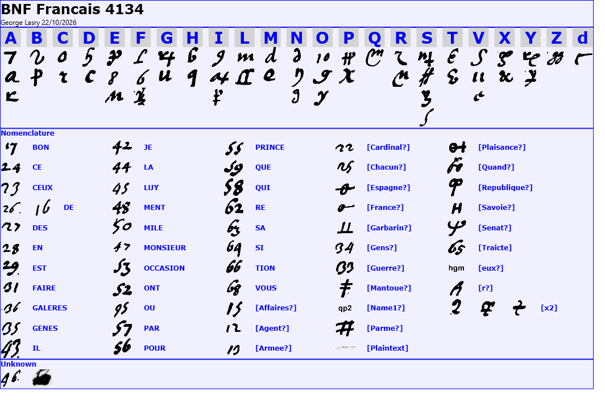
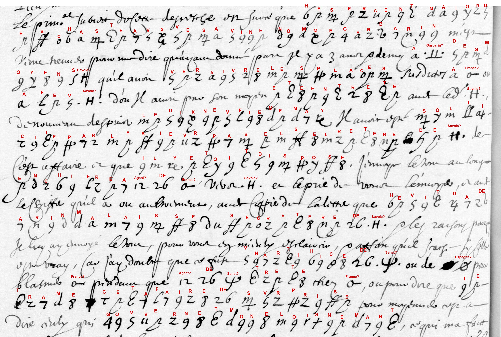

Reference. Three manuscripts in one cipher, 43 images. Cyphersolver targets sabran1631 and sabran1633; BnF fr. 4135 has no target yet (sabran1635 proposed).
- Bibliothèque nationale de France, Baluze 155, f. 79r–v (Gallica).
- BnF, Français 4134, ff. 46v–73v (Gallica).
- BnF, Français 4135, ff. 132–252 (Gallica).
Solved by George Lasry with CTTS in 2022 and its built-in cryptanalysis. The pages were transcribed in CTTS (CrypTool Transcriber and Solver), and the key was recovered with CTTS's built-in cryptanalysis. In October 2026 the work was completed with Claude Opus 5.5 and OpenAI Codex: - the clear text was transcribed; - symbols missing from the transcription were added; - the symbol types were reviewed against the images; - the nomenclator readings were completed from context.
All 3,353 cipher signs are assigned to a symbol type; one code (46) is still unknown. Of the 3,353, 2,853 are letter homophones, 287 have a firm code reading, and 212 have a tentative one ([France?], [Republique?], …).
The cipher is the one S. Tomokiyo calls the "Louis XIII–Sabran cipher (1631)". Lasry solved it in 2022 on the King's letter in Baluze 155 and found that it is also used in Sabran's letter-books. The same key reads all three manuscripts here:
| Source | Images | Cipher signs | Letters | Cyphersolver |
|---|---|---|---|---|
| Baluze 155, f. 79r–v: Louis XIII to Sabran, Dijon, 28 March 1631 (original) | a1, a2 | 528 | 1 | sabran1631 (Lasry's 2022 decipherment) |
| fr. 4134 (Sabran's Troisième livre des negotiations … à Gennes, 1633): Sabran to Bouthillier | 46v–73v (14) | 1,061 | 8 | sabran1633 (issue #56: partial AI reading of nine leaves) |
| fr. 4135 (Le quatrième livre …, 1634–1635): Sabran to Bouthillier | 132–252b (27) | 1,764 | 9 | none yet |
Tomokiyo also lists Baluze 156 f. 157, a 1636 copy of a Sabran letter with cipher passages. It probably uses the same cipher but is not covered here.
Bold marks matter written in cipher. Dates in square brackets are inferred from the order of the leaves and the BnF catalogue. Most images show only part of a letter.
The original letter as received by Sabran: two pages, a1 and a2. It is all in cipher after the opening, which was written in clear.
| # | Folio | Date | Content |
|---|---|---|---|
| 1 | f. 79r–v | 28 Mar 1631 | Louis XIII thanks Sabran for his despatches and answers two points. On the first (in cipher): he declines, for now, the terms offered by the Prince of Monaco through the sieur Rossy, and will not have Rossy come to court. Sabran is to keep the prince attached to the crown, without a new treaty but without breaking off the talks. |
These are copies in Sabran's letter-book for 1633 (14 images, 8 letters). Except for the first, the letters follow one affair, from offer to discovery. Giambattista Garbarino ("Garbarin"), of Sassello, offers to hand over the castles of Savona. Sabran passes the offer in cipher to the French agent in Savoy and keeps himself out of it. Genoa discovers the plot, and the munitioner and Garbarin are taken to Genoa.
| # | Folio | Date | Content |
|---|---|---|---|
| 2 | f. 46v–47 | 16 Jun 1633 | The citizens of Genoa want war; the Senate distrusts them and blames Sabran; the council debates admitting a French resident. The Cardinal-Infante at Vigevano. |
| 3 | f. 50v | [23 Jun 1633] | Garbarin, sergeant-major of the castles of Savona, offers to hand them over to France or Savoy. Sabran sends the matter in cipher to the French agent in Savoy and suspects a trap. |
| 4 | f. 52 | [1 Jul 1633] | The affair depends on what the comte de Praslin finds out; Sabran wants to stay out of sight. Discontent in the Riviera. |
| 5 | f. 54 | [Jul–Sep 1633] | The money Garbarin asks for should come from Savoy, not from Sabran, so that France does not appear. |
| 6 | f. 57r–v | [Jul–Sep 1633] | Garbarin comes back disguised as a peasant, with a letter from the munitioner of Savona. He lays out Savoy's plan: ladders, a thousand men by sea landing at Le Fornace, one mile from the castle, and a son left with Savoy as a pledge. Sabran sends him away without an answer. |
| 7 | f. 66r–v | [Sep 1633] | The plot is discovered: the munitioner and two others are brought to Genoa, and the matter is kept quiet. |
| 8 | f. 69v | [Oct 1633] | Sabran followed his orders; the proposal was meant to deceive him. The munitioner and Garbarin are in Genoa. |
| 9 | f. 73v | [21 Oct 1633] | The Signoria "could do no less than run the risk with Spain" (short fragment). |
These are copies in Sabran's letter-book for 1634–1635 (27 images, 9 letters). Letter 10 returns to Monaco. The others, from October to December 1635, show: - the siege of Valenza by the French, Savoyard and Parmesan army; - Genoa's help to the Spanish fleet, which had taken the Lérins islands; - Sabran's plans for Tortona, Serravalle and Novi; - his watch on the Genoese families; - his own servants in the pay of the State Inquisitors.
| # | Folio | Date | Content |
|---|---|---|---|
| 10 | f. 132r–v | 30 May 1635 | Reopen the Monaco talks (Rossi is dead), or surprise Monaco with troops from Pinerolo; there are fewer than thirty Spaniards there. |
| 11 | ff. 215v–216r | [8 Oct 1635] | Plan: take Tortona and Serravalle, blockade Alessandria, and prefer Novi to Gavi so as not to alarm Genoa. |
| 12 | ff. 218r–220r | 18 Oct 1635 | Genoa let the Spanish fleet use its ports for the capture of the Lérins islands; Sabran protests to the Signoria and advises waiting for the fall of Valenza; he recommends Camillo Doria for a galley. |
| 13 | f. 224v | 21 Oct 1635 | Waiting for the capture of Valenza; the [Republic?] will not soon be brought to [the league]. |
| 14 | ff. 227–229v | [25 Oct / 2 Nov 1635] | Closing the passages to [Spain?]; the enemy fortifies near Valenza; the abbés de Fiesque; Centurione's son boasts of a spy in Sabran's house. |
| 15 | ff. 232r–233r | [16 Nov 1635] | The Genoese claim [Savoy?] let the Spanish relief into Valenza on purpose; the abbé Tovrre, [agent?] of [Savoy?] at Milan; Lusancon on his way to the duc de Rohan. |
| 16 | ff. 241r–242v | [30 Nov / 4 Dec 1635] | Sabran's servants bribed by Genoa's State Inquisitors, 25 écus a month; enterprises proposed against Monaco and Finale. |
| 17 | f. 245v | [Dec 1635] | A rumour that Sauli is to be lieutenant general of the French galleys; Prince Doria's offer refused. |
| 18 | ff. 251v–252r | 18 Dec 1635 | "True neutrality", grain for Provence, keeping Antoine Sauli to his promise, Sabran's coming departure; 4,000 Spaniards landed at Vado. |
A homophonic substitution of 22 letters with 51 signs (up to four for S). Some letter signs are digits: 7 = A, 8 = E, 9 = I, 10 = O, 11 = V. The nomenclator has: - 41 two-digit codes for words and syllables, in the order of the first letter of their meaning (17 bon, 24 ce, 26 de, 35 Genes, 47 monsieur, 59 que, 68 vous, 95 ou); - ten name signs; - three signs that double the preceding letter.

The clerks' hands differ from leaf to leaf, so one sign can look different from page to page. One example: the "6" shape is H and the straight "b" is F in the 1631 key and the 215/232 hands, but the clerk of 57b/57v and 242v–245v writes his H with a straight stem and his F as ℒ.
The French text and English translation of all 18 letters follow, grouped by manuscript. Bold = written in cipher. The readings by image are in readings.html.

fr. 4134 f. 50v, the page with the most cipher (276 signs). The red decryption is drawn from the CTTS boxes and key.
The original letter of 28 March 1631, as received by Sabran (Gallica btv1b9001401d).
| From | Louis XIII |
| To | Melchior de Sabran, French resident at Genoa |
| Date | 28 March 1631 (catalogue: Baluze 155 f. 79; no date line in the images; the text refers to Sabran's dispatches of 16 February and of the 2nd and 3rd "of this month", which fits March 1631) |
| Images | a1 (f. 79), a2 (following page). Fragment: the images stop after the answer to the first of the two points; the second point (Sabran's stay at Genoa), the date line and the signature are not imaged. |
Summary. The king thanks Sabran for his dispatches of 16 February and those of 2 and 3 March to Bouthillier, and for his zeal. He announces that he will answer two points: the negotiation with the Prince of Monaco, and Sabran's stay at Genoa, which the Spaniards dislike and try to end. On the first point (in cipher), he has decided not to accept the conditions proposed for the prince, nor to bring the Sieur Rossy to court. Sabran should keep the prince well disposed to France through Rossy and assure him of the king's goodwill and protection, without making any new treaty, but also without breaking off the negotiation, so that it can be taken up again later.
(f. 79, image a1) Monsr de Sabran, J'ay veu par vos depesches du xvi. febvrier apportees par l'ordinaire, et depuis par celles que vous avez escrittes au Sr Bouthillier des ii. et iiie de ce mois, le soing et diligence que vous apportez pour me tenir adverty de toutes les choses qui se passent de dela dignes de consideration, et le zele et affection que vous tesmoignez pour tout ce qui s'offre[?] pour le bien de mon service, dont je suis fort content. Par celle cy je respondray a deux poinctz principaux traictez dans vos depesches. L'un regarde ce que vous avez negocie tovchant le prince de Monacho, l'avtre vostre sejovr a Genes, le degoust et desplaisir qu'en ont les Espagnolz, et les divers moyens qu'ilz ont employez pour vous le faire quitter.
(image a2) Sur le premier qui tovche ledit prince de Monacho, ayant considere le contenv avx depesches et avx papiers que vous m'avez envoyes et les conditions qui ont ete proposees pour ledit prince, je n'ai pas ivge a propos d'y entendre pour plvsievrs bonnes raisons, n'y de faire venir ici le sievr Rossy. Je trovve bon sevlement que vous entretenies avec soing par le moyen dvdit Ros[s]y ledit prince en la devotion qu'il monstre av service de cette covronne, et luy donniez tovtes assevrances de ma bonne volonte et de ma protection avx occasions qui se pr[e]senteront, sans entrer pour le present en avcvn avtre traicte avec luy, ny avssi faire avcvne rvptvre de la negociation, affin que si l'on ivgeoit a propos ci apres de la renover, que les choses soient en levr entier pour ce regard.
Monsieur de Sabran, I have seen from your dispatches of 16 February, brought by the ordinary post, and since then from those you wrote to the Sieur Bouthillier on the 2nd and 3rd of this month, the care and diligence you take to keep me informed of all things worth notice that happen over there, and the zeal and affection you show for everything that arises[?] for the good of my service, with which I am well pleased. In this letter I will answer two main points treated in your dispatches. One concerns what you have negotiated about the Prince of Monaco, the other your stay at Genoa, the dislike and displeasure the Spaniards have of it, and the various means they have used to make you leave.
On the first, which concerns the said Prince of Monaco: having considered the content of the dispatches and papers you sent me, and the conditions that were proposed for the said prince, I have not judged it fitting to agree to them, for several good reasons, nor to bring the Sieur Rossy here. I only find it good that you carefully keep the said prince, by means of the said Rossy, in the devotion he shows to the service of this crown, and give him every assurance of my goodwill and of my protection when occasions arise, without entering for the present into any other treaty with him, and also without breaking off the negotiation, so that if it is judged fitting later to renew it, things remain intact in this respect.
Copies in Sabran's letter-book, Troisième livre des negotiations du Sr de Sabran à Gennes (Gallica btv1b9060193z).
| From | Melchior de Sabran, French resident at Genoa |
| To | Bouthillier (no address on the imaged pages; in 1633 probably Léon Bouthillier, comte de Chavigny) |
| Date | 16 June 1633 (catalogue: fr. 4134 f. 46; no date line in the images) |
| Images | 46v, 47 (only the first three lines of f. 47). Fragment: the text starts in mid-sentence at the top of f. 46v (the beginning on f. 46r is not imaged) and breaks off after three lines of f. 47; no signature. |
Summary. Sabran reports that the citizens of Genoa want war, and that for a month the government has distrusted them more than ever and doubts whether it can arm them if needed. The Senate is spreading a rumour among the nobility that Sabran stirs the citizens up and keeps them hoping for a change. There was a sharp debate in the council on whether to admit a resident of France; it seems to have been decided in favour, but (as far as can be understood) with the aim that the resident should not be Sabran. He adds military news: the Cardinal-Infante has cancelled a declaration by the Duke of Feria against the people of the Valtellina, and is staying at Vigevano with the army.
(f. 46v) [?] guerre; les citadins la desirent, je l'attendois[?], je[?] despuis vng moys l'on est plus que jamais en defiance de evx et en grand doubte comme on leur osera fier les armes au besoing, mesmes que le senat faict courre quelque bruict parmy la noblesse pour l'ambassadeur, que ie les excite et entretiens d'esperance de changement. Mais on s'en rit, parce que sy l'on en avoit descouvert la moindre apparence, les pouvoient desadvouer bien tost a eulx qu'ils se promettroient facillement de semblables desseins avec moy.
Et a ce que j'apprends, il y a eu grand conflict, sy tost que l'affaire d[udi]t Colligue[?] a este porte dans le conseil, s'il falloit, ou non, permetre vn re[s]idant de [France?], ce qui semble estre resolu pour l'affirmative. Mais de s'opposer[?] pas (f. 47) tous moyens que ce ne soit pas moy, estimant d'avoir mattiere [?]se au change.
Le Card[in]al Infant a casse la declaration que le duc de Feria avoit faict en faveur des Espaignols contre les Valtelins, demeurant ferme[?] a Vigivano sur la campaigne, il [?]
[?] war; the citizens want it; I was expecting it[?]; I[?] ... for a month people have been more than ever distrustful of them, and in great doubt whether they will dare to trust them with arms in case of need; even that the Senate is spreading some rumour among the nobility, for the ambassador[?], that I am stirring them up and keeping them in hope of change. But people laugh at it, because if the least sign of it had been discovered, they could soon disown [them?] to them, [so] that they would easily expect similar designs with me. [sense unclear]
And from what I learn, there was a great dispute, as soon as the affair of the said Colligue[?] was brought before the council, whether or not to admit a resident of [France?], which seems to have been decided in the affirmative. But to work[?] by all means that it should not be me, thinking they have [?] matter for the change.
The Cardinal-Infante has cancelled the declaration that the Duke of Feria had made in favour of the Spaniards against the people of the Valtellina; he stays firm[?] at Vigevano in the field; he [?]
| From | Melchior de Sabran, French resident at Genoa |
| To | Bouthillier (no address on the image; in 1633 probably Léon Bouthillier, comte de Chavigny) |
| Date | probably 23 June 1633 (catalogue: ff. 50-51 = 23 June and 1 July; inferred: the letter on f. 52 (L04), probably of 1 July, refers to a dispatch sent eight days earlier and follows up the same affair) |
| Images | 50v. Fragment: one page only; the text runs on to f. 51 (not imaged). A cut line above the first line (perhaps the heading) is not readable. |
Summary. The main subject of the dispatch is an offer by Garbarin, sergeant-major of the castles of Savona[?], who told Sabran that three and a half years earlier he had promised to hand over these places to France or to the late Duke of Savoy, and had since been in contact with Savoy. Since 19 May he had again been approached on the matter by a secretary of Savoy (Pasel[?]) and was willing. Sabran has sent the whole affair in cipher to the [agent] of France in Savoy (probably the comte de Praslin, see L04), with a copy of a letter from the Savoyard secretary, asking him to check whether it is true and to pass it on. Sabran suspects a trap by the Genoese [Senate] or by Spain, to blame France while the Genoese [agent] is negotiating in France, or to accuse Sabran of plotting a surprise and so obtain his removal.
(f. 50v) Le prem[ier] subiect de cette despesche est [?] que [d]e sergent maior des chasteavx ve savine nomme garbarin m'est venu trouver pour me dire qu'il avoit donne parole[?] il y a 3 ans et demy a [Garbarin?] des moyens [Savoie?] qu'il avoit veraivre les places susdites a [France?] ou a fev [Savoie?], d'ou il avoit par son moyen ete entrete avec led. [Savoie?]. De nouveau despuis le dix nevfieme may il avoit este solliccite par le sievr pasel se[c]retere de [Savoie?] de cest affaire, ce que il y etoit dispose. J'envoye le tout au long enchifre a [Agent?] de [France?] [?] [Savoie?] et le prie de vouloir l'envoyer, et avec le chiffre qu'il a eu autrement, avec copie de la lettre que fevitga de arin m'a laisse du secretere de [Savoie?], et les raisons pourquoy. Je luy ay envoye le tout pour vous en mieulx esclaircir, et affin qu'il sache si cella est vray, car j'ay doubte que ce fust vn arti[f]ice de [Senat?] ou de [Espagne?] pour blasmer [France?] pendant que [Agent?] de [Senat?] trete chez [France?], ou pour dire que ie trame cet affaire de svrprise pour m'apprendre[?] [?] a dire ceulx qui gouvernet, mon eloignemant, ce qui m'a faict
The first subject of this dispatch is [?] that the[?] sergeant-major of the castles of Savona[?], named Garbarin, came to see me to tell me that three and a half years ago he had given his word[?] to [Garbarin?], of the means [Savoy?] that he had to [veraivre] the said places to [France?] or to the late [Duke of Savoy?], since when he had, through him, been kept in contact with the said [Savoy?]. Again, since the nineteenth of May, he had been approached by the Sieur Pasel[?], secretary of [Savoy?], about this affair, which he was willing to do. I am sending the whole at length in cipher to the [Agent?] of [France?] [?] [Savoy?] and ask him to send it on, together with the cipher he had received earlier[?], with a copy of the letter of the secretary of [Savoy?] that [fevitga de arin] left me, and the reasons why. I have sent him everything to inform you better about it, and so that he may find out whether it is true, for I suspected that it might be a trick of the [Senate?] or of [Spain?] to cast blame on [France?] while the [Agent?] of the [Senate?] is negotiating with [France?], or to say that I am plotting this surprise in order to [m'apprendre?] [?] — those who govern — my removal, which made me
| From | Melchior de Sabran, French resident at Genoa |
| To | Bouthillier (no address on the image; in 1633 probably Léon Bouthillier, comte de Chavigny) |
| Date | probably 1 July 1633 (inferred: f. 52 lies between ff. 50-51 (23 June and 1 July) and f. 53 (4 July) in the catalogue; the letter refers to a dispatch sent "eight days ago", which fits 23 June (L03), and follows up the same affair) |
| Images | 52. Fragment: the image shows the opening lines (no heading visible) and breaks off at the foot of the page; the rest of the letter and the signature are not imaged. |
Summary. Sabran recalls the dispatch he sent eight days earlier by way of [Parma?]. The facts of the affair (the offer to hand over the castles of Savona, see L03) depend on what the comte de Praslin finds out, and Sabran has asked him to send his findings with Sabran's ciphered report. Sabran wants to avoid being seen to take part in it, but thinks that, if it succeeded, it would be a useful stroke for [Savoy], since the [Republic] holds what belongs to [Savoy] (a guess at an unclear passage). He believes the man who made the proposal is honest, though he fears a trap meant to discredit his residence. During a nine-day stay at two places (not identified) he found the same discontent and wish for change as at Genoa.
(f. 52) Je vous ay faict vne despesche il y a huict jours par la voye de [Parme?]. L'esclaircissement dependant de ce que M. le comte de Praslin descouvrira, je l'ay prie d'accompaigner ce que je luy en ay escrit en chiffre de ce qu'il en aura appris, et vous l'envoyer [?]. Je crois que ie dois eviter aultant qu'il m'est possible d'estre apperceu avoir part en cet afaire, mais j'estime que, les apparences sauvees, sy l'affaire pouvoit reussir, ce seroit vng coup advantageux a [Savoie?] sans qu'il peust estre blasme, pendant que [Republique?] luy retien[t] [l]e sien, et seroit[?] retrouve presque en vng corps sans faire ce que il pert des si long temps ce rendre; peult estre plus important l'entremise de l'autorite de [France?]. J'estime qu'il n'y a point lieu d'artifice en celluy qui m'a faict ce proiect, quoy que je suis bien sur mes gardes, craignant que ce ne fust vng dessein pour avoir de l'avantage svr moy et combattre avec quelque justice ma residance; cependant je vous assure que pendant mon sejour de neuf jours a savonnori et a rassy j'ay trouve les mesmes mescontentemens et desir des occasions qui produisent novveavte que ici.
[?] de la romanie[?]
I sent you a dispatch eight days ago by way of [Parma?]. As the clearing up [of the affair] depends on what the comte de Praslin will find out, I have asked him to add to what I wrote to him about it in cipher what he will have learned, and to send it to you [?]. I believe that I must avoid, as far as I can, being seen to have a part in this affair; but I think that, appearances being saved, if the affair could succeed, it would be an advantageous stroke for [Savoy?], without his being blamed, since the [Republic?] keeps from him what is his, and [he] would find himself[?] again almost in one body without doing what he has been losing[?] for so long [?]; perhaps the intervention of the authority of [France?] [would become] more important. I think there is no trickery in the man who made me this proposal, although I am well on my guard, fearing that it might be a design to gain the advantage over me and to attack my residence with some justification. However, I assure you that during my nine-day stay at [savonnori] and at [rassy] I found the same discontent and wish for occasions that bring change, as here.
[?] of the romanie[?]
| From | Melchior de Sabran, French resident at Genoa |
| To | Bouthillier (Claude or Léon), secretary of state (no address or signature on the images) |
| Date | between 4 July and 11 Sept. 1633 (catalogue: ff. 53-64 = 4 July to 11 Sept.; no date line on the images) |
| Images | 54a, 54b (two fragments of f. 54; the beginning and end of the letter are not imaged, and it is not certain that 54a and 54b are contiguous) |
Summary. Fragment. Sabran mentions an order given to Garbarin, and that he himself should not receive any news from him (the context is lost). He reports his answer to the [Agent?] of [France?] / [Savoy?]: he will act exactly as he is told, but the money that Garbarin asked for should be handed over by Savoy's own messenger, not by Sabran, so that France does not appear to take part. He argues that the affair (apparently a Savoyard plot against a Genoese place, see L06-L08) could not take place without war, which France would perhaps not want, unless Spain favours it or blocks the passage of French troops towards Piacenza or Parma (the syntax of this passage is unclear). He thinks France gains an advantage from knowing about an affair which Savoy would have preferred to keep hidden.
(f. 54) [...] quelle maniere estre dict, et aussy ordre a garbarin ce que[?] a moy pour les mesmes consid[erations] [...] recevoir aulcuns advis de luy.
J'ay respondu a [Agent?] de [France?] Vbr[?] [Savoie?] que je me gouvernerai precisement selon ce qu'il me dira[?] sy l'occasion s'offre, Mais qu'aussy je le supplie que pour ce qui est de l'argent que le susnomme demandoit en attendant, Il seroit a propos que [Savoie?] le luy fist tomber entre les mains par la commodite de celluy qu'il dict luy avoir envoye, plustost que par la mienne, pour fuir toute apparence que [France?] y ayt part, en cas neantmoins qu'il [France?] apprenne en aulcune facon cet affaire, lequel ne se pourra passer sans [Guerre?], que peult estre [France?] ne voudra pas pour ce subject, sy ce n'est que [Espagne?] [r?] estant pour [interl.: [Guerre?]] par dela [Republique?] le favorise, ou empesche le passage des [gens?] de [Guerre?] que le [France?] pourroit envoyer vers [Plaisance?] ov parme, que [Republique?] ayt besoing de ce [?] divertissement, ce qui me fait croire que [France?] trouvera beaucoup d'advantages a la cog[noissance] qu'il a de cette affaire, que sans doubte [Savoie?] seroit bien aise n'estre point venu en lumiere, et l'engagement auquel il se seroit [...]
(f. 54) [...] in what manner [it should?] be said, and also order to Garbarin that[?] to me for the same considerations [...] receive any news from him.
I have answered the [Agent?] of [France?] Vbr[?] [Savoy?] that I will act exactly according to what he tells me, if the occasion arises, but also that I beg him, as for the money that the above-named was asking for in the meantime, that it would be proper that [Savoy?] should have it put into his hands through the person he says he has sent him, rather than through mine, to avoid any appearance that [France?] has a part in it, in case, however, that [France?] learns of this affair in any way, which cannot take place without [War?], which perhaps [France?] will not want for this reason, unless [Spain?] [r?], being for [interl.: [War?]] over there, [Republic?] favours it, or prevents the passage of the [men?] of [War?] that [France?] could send towards [Piacenza?] or Parma, [or] that the [Republic?] needs this [?] diversion. This makes me believe that [France?] will find many advantages in the knowledge it has of this affair, which no doubt [Savoy?] would have been glad had not come to light, and the commitment into which he would have [...]
| From | Melchior de Sabran, French resident at Genoa |
| To | Bouthillier (Claude or Léon), secretary of state (no address or signature on the images) |
| Date | between 4 July and 11 Sept. 1633 (catalogue: ff. 53-64 = 4 July to 11 Sept.; no date line on the images); written after a visit "le 23" (month not stated; inferred 23 July or 23 Aug.) |
| Images | 57a, 57b, 57c (f. 57r), 57v (f. 57v) (fragment; the beginning and end of the letter are not imaged) |
Summary. Sabran thought he was out of the affair, but Garbarin came to him again on the evening of the 23rd, disguised as a peasant, with a letter from the munitioner of Savona confirming what he had said before. Garbarin explained his contacts with Savoy (a man sent to Sassello, where his family lives; letters written for Savoy by a "Captain Velute"). Savoy wants him to meet him together with the munitioner (the former commissary of the castle has left and now lives in Genoa); the plan names the place for the ladders and a landing place, "Le Fornace", one mile from Savona and two musket shots from the castle, where a thousand men would come by sea only (apparently from Nice), wait at sea 9 or 10 miles off the day before and land at night; Garbarin would leave one of his sons with Savoy as a pledge. Sabran sent him away without an answer and asked him not to tell him any more about the affair, since everything depended on Savoy.
(f. 57) [...] Je croyois estre tout affaict dehors de l'affaire dont vous avez eu advis d'icy et d[?] [?] en effect, Mais le garbarin m'est venu trouver le 23. vespre, comme la premiere fois en paysan, avec vne lettre qu'il dict estre pour Moy dv mvnitionere de savine, qui est de son intelligence, faicte en ma faveur comme vous scavez, et du mesme stile que les autres que [Savoie?] luy faict escrire, par laquelle il advoue tout ce que le susnomme m'avoit dict auparavant, et me prie de le croire.
Alors il me dict qu'il estoit vray que pendant son premier voyage vers moy il luy avoit envoye vng homme a sacel 10 ou demeure sa familie; ou il avoit laisse vne lettre qu'a son retour il fist responce, et donna advis comme il s'en estoit declare a moy, quelques despuis il avoit receu deux lettres dont il ne fist part que [Savoie?] luy avoit faict escrire par vng nomme capitan velvte et qui [Savoie?] [interl.: et Vbr[?]].
Je ferois vous representer icy les copies de celles qu'il m'a escrittes, en suitte l'explication qu'il m'en a donne. [Savoie?] veult que le susnomme s'abouche avec luy, sans vng gentilhomme qui estoit commissere [dnt?] le chasteav et avec le mvnitionere, qui tremperoient tous deux dans le dessein quand mesme il ne voudroit passer outre en l'affaire, Mais qu'il est absolument d'opinion[?] fait[?] que le susnomme estant de retour, avec les asseurances requises pour l'execution, qu'aussy tost il le renvoyeroit avec argent et le jour que toutes choses seroient prestes[?], Mais il se trouve que le commissere n'y est plus, et reside a cette heure chez genes, et ne s'y veult plus embarasser, Mais desire bien a[?] dict il que l'affaire se passe sans luy, Mais qu'a son despart d'icy il manderoit a [Savoie?] le temps et le lieu qu'il luy pourroit envoyer le susnomme pour s'aboucher avec luy et le mvnitionere, qu'il luy faisoit scavoir le lieu, ou seroit les echeles, celluy ou debvoit arriver mile homm[e]s seullement par mer, nomme le fornace, vn mile sur (f. 57v) savone a deux mousquettades de l'endroict dv chateav, les gardes[?] qu[e][?] pourroient envoyer de nice, et demeureroit sur l'eau a 9 ou dix mil de savine le jour precedent et viendroit descendre au lieu susdict a 4 heures ou v de nvit, et que il laira entre les mains de [Savoie?] vn sien fils, sans toutesfois tirer de luy que ce qu'il avoit escrit par advance pour assvrer ses compagnons. Je l'ay congedie sans responce et prie de ne me faire plus aulcune part de l'affaire puisque tout despendoit de [Savoie?], et qu'il pouvoit s'asseurer[?] de [?] le commencement[?] en le service[?], que comme je ne voudrois pas porter obstacle a cette[?] [...]
(f. 57) [...] I believed I was completely out of the affair of which you have had news from here, and [?] [?] in effect. But Garbarin came to see me on the 23rd in the evening, as the first time [dressed] as a peasant, with a letter which he says is for me, from the munitioner of Savine, who is in his plot, written in my favour as you know, and in the same style as the others that [Savoy?] has him write, by which he confirms all that the above-named had told me before, and asks me to believe him.
Then he told me that it was true that during his first journey to me he had sent him a man at Sacel 10, where his family lives; where he had left a letter, to which he replied on his return, and gave notice how he had declared himself to me; some [time?] since, he had received two letters, of which he told [me] nothing, which [Savoy?] had had written to him by a man named Captain Velute, and which [Savoy?] [interl.: and Vbr[?]].
I would set before you here the copies of those he has written to me, and then the explanation he gave me of them. [Savoy?] wants the above-named to meet with him, without a gentleman who was commissary [dnt?] the castle, and with the munitioner, who would both take part in the design even if he should not want to go further in the affair; but that he is absolutely of the opinion[?] [?] that, once the above-named had returned with the assurances required for the execution, he would at once send him back with money and [fix] the day when everything would be ready[?]. But it turns out that the commissary is no longer there, and now lives in Genoa, and does not want to be involved any more, but wishes, he says, that the affair should take place without him. But [he said] that on his departure from here he would send word to [Savoy?] of the time and place at which he could send the above-named to meet with him and the munitioner; that he would let him know the place where the ladders would be, [and] the one where a thousand men were to arrive, only by sea, named Le Fornace, one mile from (f. 57v) Savona, two musket shots from the place of the castle; the guards[?] that [they?] could send from Nice; and [the force] would stay on the water 9 or ten miles from Savine the day before, and would come to land at the said place at 4 or 5 o'clock at night; and that he will leave in the hands of [Savoy?] one of his sons, without however getting from him [anything] but what he had written in advance to reassure his companions. I dismissed him without an answer and asked him not to tell me anything more about the affair, since everything depended on [Savoy?], and that he could be sure[?] of [?] the beginning[?] in the service[?]; that, as I would not want to put an obstacle to this[?] [...]
| From | Melchior de Sabran, French resident at Genoa |
| To | Bouthillier (Claude or Léon), secretary of state (no address or signature on the images) |
| Date | probably 23 Sept. 1633 or shortly after (inferred: f. 66 lies between f. 65 = 23 Sept. and f. 68 = 7 Oct. in the catalogue; no date line on the images) |
| Images | 66 (f. 66r), 66v (f. 66v) (fragment; the beginning and end of the letter are not imaged) |
Summary. Sabran reports that the Savona affair he wrote about before is probably discovered: the munitioner and two others have been arrested and brought to Genoa, and the matter is kept secret. Public rumour says that the prisoners wanted to hand the place over to the Spaniards, whose forces had stayed so long nearby at sea and on land, and that nothing was suspected of Savoy, which has no troops near Genoa; the government keeps the matter quiet so as not to irritate Spain. Sabran himself thinks that there may be only suspicion, or that the government does not want to accuse Savoy openly, so as not to let the people think that Savoy still has secret contacts in the state. He then begins to acknowledge a dispatch (the text breaks off).
(f. 66) [...] Il est a croire que l'afaire de savone dov j'ay escrit cy devant court fortune d'estre descovverte, car l'on a mis prisoniers le mvnitionere et deux avec lvy et amenes a genes, l'afaire secret, et la voix publique jusques a cette heure est, que ceux qvi sont pris ont voullu doner la place a ceulx de [Espagne?], qui pour cest effect ont tant demeure par mer, et par terre au voysinage, s'estans disant que lors l'affaire ne s'estoit pas trouvee preste, et que l'on ne s'estoit soupconne chose aulcunement du coste de [Savoie?], puisqu'il n'a point de trovpes pres de genes, et que ceulx qvi govvernent tiennent la chose secrette pour n'irriter [Espagne?], ou plustost celer a genes l'attentat pour ce[?] (f. 66v) desservir [Espagne?].
Je suis aussy porte a croire que il n'y ayt que dv sovpson et que rien ne soit decovvert, ou que ils ne veullent pas faire plus grande esclaircissement accvs [Savoie?] pour ne donner espoir a ce pevple que [Savoie?] ayt encores de l'intelligence dans cet etat.
J'ay receu[?] le [?] avec la depesche du dernier escrite par M. [?] qui avoit [...]
(f. 66) [...] It is to be believed that the affair of Savona of which I wrote before runs the risk of being discovered, for they have put in prison the munitioner and two with him, and brought [them] to Genoa, the affair [kept] secret; and the public talk up to this hour is that those who are taken wanted to give the place to those of [Spain?], who for this purpose stayed so long at sea, and on land in the neighbourhood, saying [?] that at that time the affair was not found ready; and that nothing at all was suspected on the side of [Savoy?], since he has no troops near Genoa; and that those who govern keep the matter secret so as not to irritate [Spain?], or rather to hide the attempt from Genoa so as to[?] (f. 66v) harm [Spain?].
I am also inclined to believe that there is only suspicion and that nothing is discovered, or that they do not want to make a fuller clarification, accus[ing?] [Savoy?], so as not to give hope to this people that [Savoy?] still has secret contacts in this state.
I have received[?] the [?] with the dispatch of the last [day of the month?], written by M. [?], who had [...]
| From | Melchior de Sabran, French resident at Genoa |
| To | Bouthillier (Claude or Léon), secretary of state ("Monsieur"; no address or signature on the image) |
| Date | probably 7 Oct. 1633 (inferred: f. 69v lies between f. 68 = 7 Oct. and f. 73 = 21 Oct. in the catalogue, and is probably part of the letter of 7 Oct.; no date line on the image) |
| Images | 69v (f. 69v) (fragment; the beginning and end of the letter are not imaged) |
Summary. Sabran answers what Bouthillier wrote about Savoy's design: his conduct must have pleased him, as it followed the orders given, and he was right to think that the proposal had little substance and was meant to deceive him. He adds that the munitioner of Savona and Garbarin have been brought to Genoa; the reason he gives (in cipher) does not make clear sense (perhaps that the story is too long to put in cipher - guess). He then begins to tell "an amusing affair" (the text breaks off).
(f. 69v) [...] Quant a ce que vous me faictes la faveur de m'escrire touchant le dessein de [Savoie?] de me respondray que ma procedure vous a deu[?] plaire toute selon l'ordre que vous me donnez, aussy n'ay je pas este trompe en l'opinion qu'il y avoit peu de sollidite en la proposition, et du dessein de me surprendre. Despuis vous avez sceu, Monsieur, que le mvnitionere [d]e savone et garbarin ont este amenes icy, ce parceque le discovrse nest longie qvi tel a chifre.
Il faut Monsieur que je vous conte icy vng plaisant affaire, dont je [...]
(f. 69v) [...] As to what you do me the favour of writing to me about the design of [Savoy?], [I] will answer that my conduct must[?] have pleased you, being entirely according to the order you give me; and I was not mistaken in the opinion that there was little solidity in the proposal, and [that it was] a design to deceive me. Since then you have learned, Monsieur, that the munitioner of Savona and Garbarin have been brought here; this because the discourse is not long which such has cipher [sense unclear].
Monsieur, I must tell you here an amusing affair, of which I [...]
| From | Melchior de Sabran, French resident at Genoa |
| To | Bouthillier (Claude or Léon), secretary of state (no address or signature on the image) |
| Date | 21 Oct. 1633 (catalogue: f. 73 = 21 Oct.; f. 73v is its verso; no date line on the image) |
| Images | 73v (f. 73v) (short fragment; the beginning and end of the letter are not imaged) |
Summary. Short fragment, mostly in clear. The general of the posts, a member of the "consiliet" (probably the Consiglietto, the Minor Council of Genoa - guess), could not keep himself from writing to Sabran's secretary that the Signoria could do no less than run the risk with Spain, and that the fear of losing the enjoyment [of something] ... (the text breaks off).
(f. 73v) [...] [?] le general des postes, qui est du consiliet, ne s'est peu garder d'escrire a mon secr[etai]re que cette seig[neu]rie ne pouvoit moins que de courir la risque d'Espaigne, et que la crainte de perdre la jouissance [...]
(f. 73v) [...] [?] the general of the posts, who is a member of the Consiliet, could not keep himself from writing to my secretary that this Signoria could do no less than run the risk of Spain, and that the fear of losing the enjoyment [...]
Copies in Sabran's letter-book, Le quatrième livre des negotiations de Mr de Sabran …, 1634–1635 (Gallica btv1b9060194c).
| From | Melchior de Sabran, French resident at Genoa |
| To | Bouthillier (no address on the imaged leaves) |
| Date | 30 May 1635 (catalogue; no heading on the imaged leaves) |
| Images | 132, 132v (ff. 132r-132v; fragment: the beginning of the letter, before f. 132, and its end, after f. 132v, are not imaged) |
Summary. Sabran reminds Bouthillier that he once negotiated, through a man called de Erossi (now dead), to bring the Prince of Monaco into the King's service. He asks whether he should try to renew this contact with the prince. As an alternative, he asks whether it would not be easy, in a good season, to attack or surprise Monaco with troops from Pinerolo, since the Spanish garrison has fewer than thirty men. He stresses the value of the port, the only one Spain has on that coast from Barcelona onwards: holding it would keep Genoa in check, raise the reputation of French power, and secure the passages and trade.
(f. 132) [...] ressouviendray, Monsieur, qu'autrefois j'ay traité avec vn personnage no de Erossi, qui est mort, pour attacher au service du Roy le prince de Monaco, et si vous trouverez a propos que je recherche quelque expediant de renouer cette prattique avec ce prince la, s'il est possible, ou si ce ne seroit point vne (f. 132v) chose aisée en quelque bonne saison de les esloigner [?] des [gens?] de [Espagne?], et faisant advancer les nostres et des [gens?] de [Guerre?] de Pignerol [France?] ataqver ou svrprandre Monaco, ou il n'y a pas trante Espagnols, et bon le port est si considera[ble?] et le seul a [Espagne?] depuis Barcelonne, ce qui tiendroit bien en bride [Republique?] et accroistroit la reputation du pouvoir de [France?] et asseureroit les passages et commerce [?]
(f. 132) [...] will remind [you], Sir, that some time ago I negotiated with a person [named?] de Erossi, who has died, in order to attach the Prince of Monaco to the King's service; and [I ask] whether you would think it proper that I look for some means to renew this dealing with that prince, if it is possible, or whether it would not be an (f. 132v) easy thing, in some good season, to remove them [?] from the [men?] of [Spain?], and, by bringing forward our own [troops] and [men?] of [war?] from Pinerolo, [France?] [could] attack or surprise Monaco, where there are not thirty Spaniards; and good, the port is so considerable, and the only one for [Spain?] from Barcelona onwards, which would keep [the Republic?] well in check, would increase the reputation of the power of [France?], and would secure the passages and trade [?]
| From | Melchior de Sabran, French resident at Genoa |
| To | Bouthillier (no address on the imaged leaves) |
| Date | probably 8 October 1635 (inferred: the catalogue gives three letters on ff. 214-215, of 30 Sept., 4 and 8 Oct., and this one runs on to f. 216, so it is most likely the last of them; the letter of 18 Oct. (L12) refers to "the 8th" on the same subject) |
| Images | 215v, 215a, 215b (ff. 215v-216r; 215a and 215b are the upper and lower parts of f. 216r and overlap by one line; fragment: the beginning of the letter and its end on f. 216v are not imaged) |
Summary. Sabran argues that the Spanish naval force must be kept away from the Milanese, and that at small cost Alessandria could be blockaded and would fall in time. Nothing should be shown about Novi before Tortona and Serravalle are taken, so as not to alarm Genoa, which has just reinforced Gavi; Genoa would mind an attack on Novi less than one on Gavi. France could justify cutting Spain's use of Genoa by land as the counterpart of Spain cutting France off by sea. With Valenza (besieged by the King's army) apparently about to fall, he proposes taking Tortona and Serravalle, which would close the road from Alessandria to Milan; the road from Genoa to Alessandria could only be closed by taking Gavi (hard, and Genoa would defend it) or Novi (easier, but Genoa might take it as a breach). There is also a remark (unclear) that people doubt whether Savoy will serve wholeheartedly.
(f. 215v) [...] incommodité que l'on souffrira par l'impuissance, ce qui [chacun?] vouldroit [?] entier; aussy que c'est pour empescher que l'armemant naval ne vienne svr le Milanois. Tout cela est possible sans grands frais, et Alexandrie demeurera envestie et tombera [e?] a loysir. Mais il ne faut faire aucun semblant que l'on n'aye les deux autres lieux que j'ay nommé, ny advertir Genes que l'on veuille se saisir de Novi que l'on ne soit en estat de le prandre, et de donner subiect a Genes de creindre davantage. Il semble que [Republique?] le prenne, car on a envoyé renfort de canons, [gens?] et mvnitions a Gavi; mais [Senat?] n'aura pas tant de jalousie de voir attaquer Novi que Gavi: et nous aurons excuse de vouloir empescher a [Espagne?] la pratique de Genes par terre, qu'il empesche a [Espagne?] par mer. J'ay creu vous debvoir donner cez advis, qui semble avoir besoin d'estre bien consideré pour la consequence [...]
(f. 216) D'ailleurs obligé, ce que fait que l'on doubte que [Savoie?] veulle servir [Espagne?] nettement, chacun croyant que cela ne se peut faire sans luy.
A present que Valance semble estre preste a succomber soubz les armes du Roy, et la place sur le point de servir d'exemple a tout le Milanois selon qu'elle se laissera reduire a l'extremité, avecq beaucoup de preiudice aux aff[ai]res du R[oy] par son retardem[en]t, je croy que vous trouverez bon que je die tous les expediens que je me puis imaginer et tire[r] de la cognoissance de ce lieu et de pays a loysir, pour faire reussir les affaires aussy advantageusement que si [Espagne?] avoit Alexandrie.
Il semble, Monsieur, que l'on n'aura point de peine, quoy que la saison soit sur le point d'estre fascheuse par la pluye, de prandre Tortone et Saravale; double[?] chemin d'Alexandrie a Milan sera bouché, mais celvy de Genes en Alexandrie ne le sera pas, et la se fera le magasin de toutes leurs prouisions et munitions; et quand cela ne serviroit que a la randre imprenable, il leur serviroit tousjours beaucoup. Et ce chemin ne peut etre bouché a [Espagne?] et ouvrir a [France?] que en prenant Gavi, ou Novi. Le premier est difficile, et pourtant necessairem[en]t Genes a le defandre, a cause de l'importance; l'autre seroit aisé et plus pres de Genes, ce que l'on ne pourroit, quand on vouldroit, defandne, en ce cas il y aura peril que Genes ne le prenne a rvptvre. Mais il semble que si la necessité du poste est bien representée, d'empescher que nul secovrs viene a [Espagne?] par la, tout de mesme comme [Espagne?] aussy ses galeres empesche que nous ne praticquions Genes, et le dessein de donner m[?] lieu dez effectz et de l'utilité parico, et empescher que Genes n'en recoive [...]
(f. 215v) [...] inconvenience that will be suffered through the powerlessness, which [everyone?] would want [?] entire; also that it is to prevent the naval force from coming to the Milanese. All this is possible without great cost, and Alessandria will remain invested and will fall [e?] in due time. But one must make no show [of it] until one has the two other places that I have named, nor warn Genoa that one wants to seize Novi before one is in a position to take it, and so give Genoa cause to fear more. It seems that [the Republic?] takes it [so?], for they have sent reinforcements of cannon, [men?] and munitions to Gavi; but [the Senate?] will not be as jealous to see Novi attacked as Gavi; and we shall have an excuse for wishing to deny [Spain?] access to Genoa by land, as he denies it to [Spain?] by sea. I thought I ought to give you this advice, which seems to need careful thought because of its consequences [...]
(f. 216) Otherwise obliged, which makes people doubt that [Savoy?] really wants to serve [Spain?], everyone believing that this cannot be done without him.
Now that Valenza seems ready to fall to the King's arms, and the place is on the point of serving as an example to the whole Milanese, according to how far it lets itself be reduced to extremity, with great harm to the King's affairs through its delay, I believe you will approve that I state all the expedients that I can imagine and draw at leisure from my knowledge of this place and country, to make affairs succeed as advantageously as if [Spain?] had Alessandria.
It seems, Sir, that there will be no difficulty, although the season is about to become bad because of the rain, in taking Tortona and Serravalle; [thus?] the road from Alessandria to Milan will be blocked, but that from Genoa to Alessandria will not be, and there they will set up the store of all their provisions and munitions; and even if this only served to make it impregnable, it would still be of great use to them. And this road cannot be closed to [Spain?] and opened to [France?] except by taking Gavi or Novi. The first is difficult, and yet Genoa is necessarily [bound] to defend it because of its importance; the other would be easy, and nearer to Genoa, which they could not defend even if they wanted to; in that case there will be a risk that Genoa will take it as a breach. But it seems that if the necessity of the post is well presented, [namely] to prevent any relief from coming to [Spain?] that way, just as [Spain?] with its galleys also prevents us from dealing with Genoa, and the plan to give [?] place to the effects and of the usefulness parico, and to prevent Genoa from receiving [...]
| From | Melchior de Sabran, French resident at Genoa |
| To | "Monsieur Bouthillier" (heading on the page; the mention of "monsieur vostre filz" suggests Claude Bouthillier, father of Léon, comte de Chavigny) |
| Date | 18 October 1635 (heading on the page; agrees with the catalogue) |
| Images | 218, 218v, 219, 219v, 220 (ff. 218r-220r; fragment: the letter goes on after f. 220r, which is not imaged, and there are gaps between f. 218v and f. 219r and perhaps between f. 219v and f. 220r) |
Summary. Following his letter of the 8th, Sabran argues that Genoa's help to the Spanish fleet (use of its ports) gives the King good cause to seize Novi; Genoa could be brought to accept French use of the land as the counterpart of Spain's use of its ports, but Gavi should not be touched, and Tortona and Serravalle should be taken first. He reports the Genoese reaction to the Spanish capture of the Lérins islands, his protest to the Signoria that the Spaniards could not have done it without the use of Genoese ports, and an expedient he took concerning the naval army and Languedoc (unclear). On the King's order he is to make Genoa feel responsible for the loss of the islands, but he advises waiting for the fall of Valenza before acting openly. He recommends Camillo Doria, a former galley captain of Genoa and Savoy, for the command of a galley, and reports that the length of the siege of Valenza has improved the standing of the Spaniards in Italy (Modena tempted by Correggio, etc.).
(f. 218) A monsieur Bouthillier du 18 octobre 1635
Monsieur,
Despuis la mienne par le dernier ord[inai]re je vous ay escrit[?] du huitie[me], et sur ce mesme subjet je vous diray que la raison que le Roy a d'avoir [marg.: Cll] du ressentiment de ce que la commodité que l'armée navale a eu despuis des ports de cette Republique, le depart des troupes de Provence, l'estat de la coste et la saison[?] du temps pourroit a propos donner un grand subjet a la[?] Ma[jes]té, sans qu'on s'en puisse plaindre, de s'asvrer de Novi, aussy bien que je vous ay escrit qu'il seroit necess[ai]re de faire de otage tous lieux foibles et bons, mettant entre deux Gavi, dequoy [Republique?] a crainte et que l'on a amvni de nouveau; ce qui n'estant que pour empescher le secovrs, et qui [Espagne?] ne se prevaille davantage de Genes, [Republique?] pourra estre disposée, s'il semble, par la mesme raison que [Espagne?] se sert des ports, a souffrir que [France?] se servira[?] de la terre; pourquoy [Republique?] feint de croire d'estre excusable de ce que elle permis a [Espagne?], en disant que le mesme seroit permis a galeres de [France?], sachant bien que l'occasion n'en sera pas; laquelle se presentant ez[?] ceste sorte par le moyen[?] (f. 218v) que l'on n'en vient point a Gavi pour eviter de donner aucune jalousie raisonnable, et l'on pourroit demander le poste dou l'on auroit besoin et dire la raison pourquoy, en se presentant en estat[?] de le pran[d]re; outre que par la mesme raison que [Espagne?] empescher le comm[e]rce par mer, [France?] auront la sienne de l'empescher par terre. De quoy je n'ay osé donner aucun advis aux generaux d'armée ny ambassadeurs, de crainte qu'il ne fust penetré, et aussy que l'intention de [France?] [blot] ne fust autre. Mais en ce cas il n'y faudra pas estre foible, a cause des [gens?] d'Alexandrie d'une part et des [gens?] de [Espagne?] qui viendroit par mer, que [Republique?] pourroit assieger, et durant que Gavi son fort et entre devx il importe que Alexandre sans s'arrester ailleurs, l'incommodant autant pour oster la communication des deux autres lieux; mais tout premierement je crois tousjours necess[ai]re de prandre Tortone et Saravale.
J'ay receu, Monsieur, par l'ord[inai]re la faveur de la vostre du 26 p[assé] avec[?] celle du Roy pour cette Sig[neu]rie, avec quoy vous avez fort bien presumé qu'il y auroit [...] (f. 219) [...] ez Languedoc [?]
Et pour ce que vous me commandez de vous mander le sentiment que l'on a de l'entreprise des Espagnols sur les isles, on en receut icy beaucoup de desplaisir pour la necessité ou l'on commencera a se tenir, tout l'estat tout[?] y estant encores du tout[?] dou le peuple remuez fort mal. [?] sur[?] les autres[?] [?], et par la crainte que la commodité que la Sig[neu]rie a donné a cette armée navale d'Espagne de ses ports, l'estat de la Provence p[?] de troupes, sans autre but[?] ny pretexte que de forcer la barriere[?] de la France avecq plus de facilité. Et parce qu'ils croyent estre a couvert de la coustume de recevoir les galeres d'Espagne en leurs ports, je leur ay demandé pour ne le pouvoir, sy bien declarée vne armée ennemye du Roy, sy pouvoir[?] venir[?] sans marque d'hostilité de la part de la Sig[neu]rie, pource que sans cela l'Espagnol n'auroit rien entrepris, ou auroit aussy mal reussy qu'il a fait deux fois, s'il fut party de ses ports qui sont esloignez pour cette entreprise; outre le lustre[?] que la [?] [?] y prenne[?] [?] advertis[?], quoy je le juge estre de plus de dif[?]ance, et de preiudice a eux esgallement[?] qu'a nous.
Je tiens que vous trouverez fort a propos l'expedient que j'ay pris d'vne <46> de l'armée navale prisees marines de Languedoc, ce que j'ay fait [?] sans attendre les preiudices[?] que le Roy a receu du voisinage de leurs ports pour l'advertissement des Espagnols; et cela laissera constater le ressentiment qu'il en doit avoir et la qualité de l'offence qu'il en a receu, et que l'ung et l'autre seront infailliblement augmentez par le retovr des galeres en levrs ports, sans autrement engager en rien [France?] que les a faire ne[?] (f. 219v) soit commettant estat, et cependant recognoistre l'intention de [Republique?] et ou elle povrra estre portée.
C'est ce que vous me commandez, Monsieur, que le [?] trouve a propos je fasse sentir a [Republique?]: que comme l'on a facillité la prise de noz isles, il seroit a presumer que on s'employera affin que les [gens?] de [Espagne?] previennent les forces qu'on prepare par leur retrete volontaire. J'ay leur crainte que cela ne [?] d'autre[?] inutile, par ce que le chef des galeres de [Espagne?] estant ennemy juré de [Republique?], il a plus de contentement de ce que [Republique?] souffre que de la prise des isles, et que cela pourroit persuader de nous par de la feblesse, estant chose asseurée que si [Republique?] le peut, son propre interest l'y obligera assez, et la crainte que pour maintenir leur prise les galeres de [Espagne?] ne retourneront es ports de [Republique?] et que [France?] ne souussiste[?].
Je croie que [France?] n'ayant aucun passage par l'Italie que par l'estat de [Republique?], il faut attendre la prise de Valance p[our] estre plus pres et plus forts et plus libres pour s'engager autant plus ouvertement du ressantimant.
(f. 220) q. b. comme dy etre peu[?] la seule raison que son[?] scaura l'acquerir ainsy, si bien que je ne puis rien adjouster sur ce subiect a ce que le s[ieu]r de Budaud[?] vous aura peu faire entendre, monsieur vostre filz; cependant je croy qu'il n'a peu parler au Roy ny a monsieur le Cardinal, attendant tousjours voz commandemens.
Je n'ay rien a adjouster a ce que je vous ay dit touchant monsieur Savli, sinon qu'il y a vn nommé Camile Doria qui a commandé douze ou quinze ans galeres de [Republique?] et despuis de [Savoie?], fort capable et intelligent de commander et bonnement[?] galeres, accepteroit volontiers de quelque personne de qualité la lieutenance et conduitte de vne galere, et que je scay estre amy deux comites fort intelligens et cognoissans selon le besoin.
Je ne vous dis rien des nouvelles du camp, d'ou l'on m[?] [?] [?] [?] n'en pourrois escrire que ce que j'en ay appris de m[onsieur] Desmery, que vous aurez sceu plustost. Mais je vous puis asseurer que la longueur de siege a fait prendre bonne opinion des affaires des Espagnolz, et dispose par toute l'Italie beaucoup ayans[?] esprits a leur advantage; [Parme?] tant sont [?] apres[?]; Modena de mesme chatouillé de Correggio; [Parme?] [?] contents; monsieur de Believre, selon creu[?] que le trop tarder de veoir debvoir [Mantoue?] et [Parme?], avant quoy on a veu la [Guerre?] adjustée et commancée, leur a donné subiect de ce que l'on void, avecq[?] opinion que si en mesme temps [...]
(f. 218) To Monsieur Bouthillier, of 18 October 1635
Sir,
Since mine by the last ordinary [post], I wrote[?] to you of the 8th, and on this same subject I will tell you that the reason the King has to resent [marg.: Cll] the convenience that the naval army has had since then from the ports of this Republic, the departure of the troops from Provence, the state of the coast and the season[?] could suitably give His[?] Majesty good cause, without anyone being able to complain of it, to make sure of Novi; just as I wrote to you that it would be necessary to take as hostage[?] all weak and good places, putting Gavi between the two, for which [the Republic?] fears and which they have newly supplied with munitions. This being only to prevent the relief, and so that [Spain?] does not take further advantage of Genoa, [the Republic?] may be disposed, if it seems [right], by the same reasoning by which [Spain?] uses the ports, to allow that [France?] use the land; for [the Republic?] pretends to believe itself excusable for what it permitted to [Spain?], saying that the same would be permitted to the galleys of [France?], knowing well that the occasion for it will not arise. This [occasion] presenting itself in[?] this way, by means[?] (f. 218v) that one does not go to Gavi, so as to avoid giving any reasonable jealousy, one could ask for the post one needed and give the reason why, while appearing in a position[?] to take it; besides, by the same reasoning by which [Spain?] prevents trade by sea, [France?] will have its own to prevent it by land. I have not dared to give any advice of this to the army generals or to the ambassadors, for fear that it be found out, and also [in case] the intention of [France?] [blot] were different. But in that case one must not be weak there, because of the [men?] of Alessandria on one side and the [men?] of [Spain?] who would come by sea, which [the Republic?] could besiege; and while Gavi its fort and between the two, it is important that Alessandria without stopping elsewhere, harassing it as much in order to cut the communication of the two other places; but first of all I still believe it necessary to take Tortona and Serravalle.
I have received, Sir, by the ordinary, the favour of yours of the 26th of last month, with[?] the King's [letter] for this Signoria, with which you rightly presumed that there would be [...] (f. 219) [...] in Languedoc [?]
And since you order me to send you what is thought here of the Spaniards' enterprise against the islands: it caused much displeasure here because of the necessity in which they will begin to find themselves, the whole state [?] being still entirely[?] where the people [are] very badly stirred. [?] on[?] the others[?] [?], and through fear [arising from] the convenience the Signoria gave this Spanish naval army from its ports, the state of Provence [?] of troops, with no other aim[?] or pretext than to force the barrier[?] of France more easily. And because they believe themselves covered by the custom of receiving the Spanish galleys in their ports, I asked them [how], since it could not, being so openly declared an army hostile to the King, [it] could[?] come[?] without a mark of hostility on the part of the Signoria; because without this the Spaniard would have undertaken nothing, or would have succeeded as badly as he did twice, if he had set out for this enterprise from his own ports, which are far away; besides the lustre[?] that the [?] [?] take[?] there [?] warned[?], which I judge to be of greater [?], and of harm to them equally[?] as to us.
I believe you will find very suitable the expedient I took of a <46> of the naval army prisees marines of Languedoc, which I did [?] without waiting for the harms[?] that the King has received from the nearness of their ports for the warning of the Spaniards; and this will make clear the resentment he must have of it and the nature of the offence he has received, and that both will certainly be increased by the return of the galleys to their ports, without otherwise committing [France?] in anything except to make them [?] (f. 219v) be committing state[?], and meanwhile to find out the intention of [the Republic?] and where it can be led.
This is what you order me, Sir, that the [?] finds proper that I make [the Republic?] feel: that, as they made easy the capture of our islands, one would expect them to work so that the [men?] of [Spain?] forestall the forces now being prepared by their voluntary withdrawal. I have [?] their fear that this would [?] be otherwise[?] useless, because the commander of the galleys of [Spain?], being a sworn enemy of [the Republic?], has more satisfaction from what [the Republic?] suffers than from the capture of the islands; and that this could persuade [them] of weakness on our part, it being certain that if [the Republic?] can, its own interest will oblige it enough; and the fear that, to keep their prize, the galleys of [Spain?] will not return to the ports of [the Republic?], and that [France?] will not [?].
I believe that, since [France?] has no passage through Italy except through the state of [the Republic?], one must wait for the capture of Valenza, in order to be nearer, stronger and freer to commit oneself all the more openly to resentment.
(f. 220) q. b. as [?] the only reason that [?] will be able to acquire it thus, so that I can add nothing on this subject to what the sieur de Budaud[?] will have been able to tell you [and?] your son; meanwhile I believe he has not been able to speak to the King or to the Cardinal, still waiting for your orders.
I have nothing to add to what I told you about Monsieur Sauli[?], except that there is a man named Camillo Doria, who commanded for twelve or fifteen years galleys of [the Republic?] and since then of [Savoy?], very capable and skilled in commanding and [?] galleys, [who] would gladly accept from some person of quality the lieutenancy and command of a galley, and whom I know to be a friend of two very skilled and knowledgeable comites [galley masters], as needed.
I tell you nothing of the news from the camp, from where [?] [?] [?] [?] could write only what I have learned from Monsieur Desmery, which you will have known sooner. But I can assure you that the length of the siege has made [people] form a good opinion of the affairs of the Spaniards, and has disposed throughout Italy many minds[?] in their favour; [Parma?] so much are [?] after[?]; Modena likewise tempted by Correggio; [Parma?] [?] content; Monsieur de Bellièvre, according to [?], believed[?] that the too long delay in seeing [?] [Mantua?] and [Parma?], before which the [war?] was seen settled and begun, has given them cause for what one now sees, with[?] the opinion that if at the same time [...]
| From | Melchior de Sabran (Genoa) |
| To | Bouthillier (secretary of state) |
| Date | 21 October 1635 (catalogue, f. 224; no date line on the image) |
| Images | 224v (f. 224v; a fragment of 7 lines: the text begins and ends in the middle of a sentence, the rest of the letter is not imaged) |
Summary. Sabran says he is waiting for the "prose" (probably "prise", capture) of Valenza, which is of great consequence. Because of the assurances given by the [men?] of [Spain?] and the show of many preparations, the [Republic?] (presumably Genoa) will not soon be induced [to join the league?]. He thinks he can expect this only when the season has put affairs in a better state. The fragment breaks off after this.
(f. 224v) ... raison a l'interest [?] besoin d'en[?] estre ce que je faitz attendant ma prose de Valance, dont beaucoup de consequence de tre[?] recognoissant bien que dans l'asseurance que les [gens?] de [Espagne?] donnez du captaine[?], et pendant l'ostentation de beaucoup de preparatifs, [Republique?] ne sera pas aussitost induite allegue, ie n dois attendre que lorsque a[?] la saison aura reduit les aff[ai]res en meilleur estat. Estant tant[?] ...
(f. 224v) ... reason to the interest [?] need to[?] be what I am doing, while waiting for my "prose" [capture?] of Valenza, which [is] of much consequence of very[?] ..., recognising well that, in the assurance that the [men?] of [Spain?] give of the captain[?], and during the display of many preparations, the [Republic?] will not so soon be induced [to the league?]; I [must?] expect [this] only when the season has brought affairs into a better state. Being so[?] ...
| From | Melchior de Sabran (Genoa) |
| To | Bouthillier (secretary of state) |
| Date | 25 October or 2 November 1635 (catalogue: ff. 226-227 = 25 Oct. and 2 Nov.; no date line on the images, so which of the two is not certain) |
| Images | 227, 228v, 229, 229v (ff. 227r, 228v, 229r, 229v; fragments: f. 227 begins in the middle of a sentence, ff. 227v and 228r are not imaged, and f. 229v breaks off; it is not certain that ff. 228v-229v belong to the same letter as f. 227) |
Summary. Sabran discusses closing the land and sea passages to [Spain?] and the attitude of the [Republic?] (presumably Genoa), which, he thinks, will do nothing for or against France unless forced, and can only grant something under a necessity that excuses it towards France; once Tortona and Serravalle are taken, the passage towards Alessandria would be hard for the enemy. He reports that the enemy is fortifying a mile from Valenza. On ff. 228v-229 he reports what a cardinal on his way to Rome said to some Genoese, among them the abbés de Fiesque, about [Savoy?] and [Spain?], and that the abbé of Sainte-Catherine (of Parma) assured the abbé de Fiesque that [Savoy?] was honest; at Genoa a union [of Savoy and Spain?] is feared as the ruin of the Republic (guess). On f. 229v he tells how Sauli warned him that the son of Centurione, a leading Spanish partisan, boasted that he knew what was done in Sabran's house through Sabran's most trusted man (a spy in the residence).
(f. 227) ... le[?] [?] autre[?]; en fin, de ces armee[s] y reuiennent, ce seroit aultant que de subiect a [France?] de fforme[?] ce fermer a [Espagne?] les passages par terre que il luy fermera par mer ne sera[?] en [?] svr l'etat de [Republique?] si [?] il me semble qu'il sera a propos et que [Republique?] luy en aye donné svget, dont il n'y pourra avoir faction[?] & plainte raisonnable quand on ne luy laissera point de forteresse, et que la chasse[?] mon[?] cardinal a la cavage[?] fole[?] de come que sans creinte jamais [Republique?] faire aucune action de malice[?] ny de bien pour [France?].
Il est vray que gagnant vne riviere [?] par bataille[?] vers Alexandrie le passage leur sera mal ayse pour ce[t] etat [quand?] nous avrons Tovrtonne et Saraval, estant ayse de venir s'oposer [?], ce qu'il sera plus ayse de le faire de chez [Republique?]; pourquoi elle ne pevt rien accorder[?] que pour vne maieste qui rende [Republique?] excusable envers [France?]. Je desespereray[?] de longtemps que je pourray le[s] esprits a recognoistre le besoin[?] que [Espagne?] a de se librer des incommoditez que il retorne[?] de [Republique?] [?] mesme jusque [Republique?] mesme pour exposer [France?] a raison[?] en cela, pour [Republique?] de luy fournir la raison expresse d'ung necessaire[?] [?] [Espagne?] par terre que [Republique?] allegue par mer. Les ennemis sont a vn mille[?] de Valance, ou ils se fortiffient [?] ...
(f. 228v) Je ne vous dirai[?] point[?] cela [Name1?] le Connestable [cipher?] monsieur le [cardinal?] de svop s'en allant a Rome il y a enuiron vingt jours, et passant a Schrsongaza[?] dans le dessein[?] du [?] [?] auecq des Genois [?], lesquelz estoient les abbes de Fiasqve [?] do[?] Saincte[?] x il auoit dessein les[?] de Genes resolu pour donner [?] Sa Ma[jes]te Catholique[?], et leur dit que [Savoie?] cognoissoit bien l'interest qu'il auoit que [Espagne?] a [Espagne?] [?] [?] Madrid pour [affaires?] par deça, et que [Name1?] luy dit qu'il rapporteroit ceste[?] forme[?] a ceux de Pignero[l] ...
(f. 229) ... dependre de luy, et qu'on le verra bientost pour [Espagne?]. Il est Jesuiste, et comme quelcun creut qu'il en parloit ainsy pour faire plaisir a la compagnie, l'abé de Ste Catherine, qui est de Parme, au duc de Parme et fort affectionné, asseura l'abé de Fiasqve que [Savoie?] estoit bon homme, et qu'on avoit parlé comme il, il le croyoit. Et par ce que il ne faut guere croire ce que ceux de Genes a dessein[?] de [Savoie?], et dont [?] j'ay obtenu[?] [?] l'avis[?] de ce dernier abee, qui est fort mon amy, pour recognoistre ce que l'abé de Fiasqve m'en a dit ne seroit point pour complaire a ceulx qui desirent randre [Savoie?] suspect a [France?], de peur qu'il ne se fie; car l'on craint grandement a Genes et l'vnion[?] de deux que ceux de [Espagne?] agissent[?] ne pourroit estre qu'avecq[?] la rvine de [Republique?]. [?] [?] que le Pape quelle[?] inclinaison[?] qu'il a auec [?] ...
(f. 229v) ... qu'il luy dict auoir esté mal asseuré[?] d'auoir accepté[?] autant chose [?]. Ce fut monsieur Savli et le filz de feu monsieur Lomelin, qui estoit pensionnaire de [France?]. Le premier me donna aduis il y a quelque temps que le filz d'un nommé Centvrion, partisan principal de [Espagne?], auoit dict en vne compagnie assez[?] [?] tenue[?] qu'il estoit[?] bien aduerty de ce qui se faisoit [?] chez moy, et par celluy qui y estant[?] [?] le plus confident, l'autre[?] medecin[?] [?] [?] pandant ma[?] maladie[?]. Il vit[?] sortir de ma maison des hommes[?] bien affectionnez a la bouche[?] du Conseil[?], de ceulx [Name1?] [?] [?] tenir[?] ce que [?] un[?] contraire. Il y a [?] moyen[?] sans nommer les autheurs de [?] [?], dont le filz de Centvrion s'estoit[?] vanté a son pere[?], a qui il n'auoit[?] sceu respondre sinon que ce[?] estoit des imaginations, lesquelles[?] je n'auois point voulu aduertir que par[?] plus grande preuue[?], me[?] contentant de le faire venir en ma maison [?] ...
(f. 227) ... the[?] [?] other[?]; in the end, [if] these armies come back there, it would be as much a reason for [France?] to try[?] to close to [Spain?] the passages by land as he will close [to him] by sea; [this] will not[?] be in [?] on the state of the [Republic?]. If [?], it seems to me that it will be proper, and that the [Republic?] may have given him cause for it, of which there can be no faction[?] and reasonable complaint when no fortress is left to him; and that the chase[?] my[?] cardinal [...] [the words "a la cavage fole de come" make no sense] that, without fear, the [Republic?] [will] never do any act of malice[?] or of good for [France?].
It is true that, by winning a river [?] by battle[?], the passage towards Alessandria will be hard for them, for this state, [when?] we have Tortona and Serravalle, it being easy to come and oppose [?], which will be easier to do from the [Republic?]'s [territory]; that is why she can grant nothing except for a majesty[?] [probably "necessity"] that would make the [Republic?] excusable towards [France?]. I will despair[?] for a long time [of being able to bring] the minds to recognise the need[?] that [Spain?] has to free itself from the inconveniences that it returns[?] from the [Republic?] [?] even as far as the [Republic?] itself, in order to expose [France?] to reason[?] in this, for the [Republic?] to provide him the express reason of a necessary[?] [?] [Spain?] by land, that the [Republic?] "allegue" by sea. The enemies are a mile[?] from Valenza, where they are fortifying themselves [?] ...
(f. 228v) I will not tell you[?] that[?] [Name1?] the Constable [cipher?] Monsieur the [cardinal?] of "svop", going to Rome about twenty days ago and passing through Schrsongaza[?] with the intention[?] of the [?] [?] with some Genoese [?], who were the abbés de Fiesque [?] [?] Saincte[?] (x he had a plan [for] them[?] of Genoa) resolved to give [?] His Catholic Majesty[?], and told them that [Savoy?] knew well the interest he had that [Spain?] to [Spain?] [?] [?] Madrid for [affairs?] on this side, and that [Name1?] told him he would report this[?] form[?] to those of Pinerolo ...
(f. 229) ... depend on him, and that he will soon be seen for [Spain?]. He is a Jesuit; and as someone believed that he spoke thus to please the company, the abbé of Sainte-Catherine, who is from Parma, [attached] to the Duke of Parma and very devoted [to him], assured the abbé de Fiesque that [Savoy?] was an honest man, and that [if] one had spoken as he [did], he believed it. And because one must hardly believe what those of Genoa [say about a] design[?] of [Savoy?], and of which [?] I obtained[?] [?] the opinion[?] of this last abbé, who is a good friend of mine, to see that what the abbé de Fiesque told me would not be to please those who wish to make [Savoy?] suspect to [France?], for fear that he might be trusted; for they greatly fear at Genoa, and [think that] the union[?] of the two, for which those of [Spain?] are working[?], could only come with the ruin of the [Republic?]. [?] [?] that the Pope, what[?] inclination[?] he has with [?] ...
(f. 229v) ... that he told him he had been badly assured[?] [of] having accepted[?] so much [?]. It was Monsieur Sauli and the son of the late Monsieur Lomellini, who was a pensioner of [France?]. The first told me some time ago that the son of a man named Centurione, the leading partisan of [Spain?], had said in a company rather[?] [?] held[?] that he was[?] well informed of what was done [?] in my house, and by the one who, being there[?] [?], [is] the most trusted; the other[?], a physician[?] [?] [?] during my[?] illness[?]. He saw[?] men[?] leaving my house who were well devoted to the mouth[?] of the Council[?], of those [Name1?] [?] [?] hold[?] what [?] a[?] contrary. There is [?] means[?], without naming the authors of [?] [?], of which the son of Centurione had boasted to his father[?], to whom he had not[?] been able to answer except that these[?] were imaginations; of which I had not wanted to give notice except with[?] greater proof[?], contenting myself[?] with having him come to my house [?] ...
| From | Melchior de Sabran (Genoa) |
| To | Bouthillier (secretary of state) |
| Date | probably 16 November 1635 (inferred: f. 232 is not in the catalogue list; the catalogue gives f. 231 = 16 Nov., and f. 232 begins in the middle of a sentence, so it seems to continue that letter; no date line on the images) |
| Images | 232a, 232b, 232v, 233 (f. 232r in two images, f. 232v, f. 233r; fragment: the beginning of the letter is not imaged, f. 232v and f. 233 break off, no signature visible) |
Summary. Sabran discusses how the first (Spanish) relief got through [to Valenza?] and the claim spread by the Genoese that [Savoy?] let it through by design; he thinks this blame comes from hatred or from a plan to make [Savoy?] suspect to France, and tells them that the King can tell an accident from a plan. He discusses whether France can make its army stronger under the name of the Duke of Parma, so that [Savoy?] would be held between two armies. He reports a story from the abbé de Fiesque that the abbé "Tovrre", [agent?] of [Savoy?] at Milan, went between Cardinal Albornoz at Pavia and the [Savoy?] camp near Valenza, but he suspects it is a trick of [Spain?] and the [Republic?] to keep [Savoy?] from uniting with France. He then describes the mood in the [Republic?] (presumably Genoa), and in an addition reports that a gentleman, the sieur de Lusancon, sent by [Savoy?] and the French [agent?], passed through Genoa on his way to the duc de Rohan.
(f. 232) ... Cela est que quand le premier secours a passé a la Lomeline[?] par deça, de toutes chemins par deça le Po auoient[?] [?] iusqu'au [Name1?], le secours a esté exposé ouuertement[?]. Par cela ce que [Garbarin?] remarque[?] tout svr [Savoie?] traitoit[?] les [gens?] de [France?] quoy qu'ilz[?] dessein[?] du suiet et de l'ennemy[?] n'y [?] [?] [?] point [Savoie?]; mais ceux de Genes publient et s'efforcent instamment[?] de me faire croyre que l'action a esté premeditée par [Savoie?]. Tellement qu'il semble que le respect que ceux de [Espagne?] portent au nom de [Savoie?] soit suivy[?] de quelque intelligence, et le blasme que ceux de [Republique?] luy luy osent si librement de [chacun?] la procedde de la haine, ou plus artificieusem[en]t du dessein de randre [Savoie?] suspect a [France?]. Mais j'asseure ceulx cy[?] que le tout se passe par desgrace, et que chacun y a rapporté ce qu'il a [Espagne?] creu plus a propos, mais aura moins de reussite que de bonne volonté, et que le Roy scaura tousiours bien distinguer ce qui peut estre accidentaire ou premedité; par ce qu'il semble estre superflu de dissimuler qui l'on ne se defie pas de [Savoie?] mesmes en auoir suiet, iusqu'a ce que l'evenement[?] d'vne[?] iournée donne subiet de croire le parti plus foibl [?] n'estre chose plus difficile par l'incertitude de la sincerité de [Savoie?].
Et parce que l'on dit que [France?] ne pourra pas, sans le mettre en soupcon, randre son [armee?] plus forte que ce qui a esté concerté, il semble que soubz le nom dv dvc de Parme ne pourra estre randue telle qu'il plaira a [France?], a cause de ce qu'en a eu des [gens?] de [Espagne?] comme luy; et quand [Savoie?] se trouuera entre [eux?] [armee?] et bonnes, si l'inclination n'estoit pas bonne, on la randroit telle par la necessité.
Je suis obligé de ne celer rien de ce que j'apprends, de peur que dans le silence le service du Roy ne s'y trouvast interessé. L'abé de Fiasqve m'a asseuré qu'un gentilhomme luy a dit sur son serment que l'abé Tovrre, [Agent?] de [Savoie?] a Milan, qu'il ne pouuoit destourner [Savoie?] de la ligve avec [France?], que pour le mesnage il luy feroit consentir et souffrir que le secovrs supporte, et que des lors s'en estoit allé a Pauie pres du cardinal Albornoz pour de la s'en aller vers [Savoie?], qui estoit pres de Valance; apres auoir demeuré longuement auecq ce [cardinal?], en sortant de la chambre, ayant pris congé, il dit fort haut que l'aff[ai]re estoit trop aduancée, qu'il n'y auoit plus de remede, ce qui surprend les plus speculatifz pour vn artifice et explique autrement; et que de la il se randit av qvartier de [Savoie?], d'ou peu de temps apres il s'en retourna vers ce [cardinal?]. Tout cela semble en quelque facon considerable apres ce qui s'est passé, mais il semble bien aussi auoir esgard a l'artifice de ceulx que le dessein a la[?] crainte que [Espagne?] et [Republique?] ont egalement que [Savoie?] ne s'unisse alors auecq [France?]; et je n'ey peu verifier que ledit [Agent?] soit retourné prez de [cardinal?] [cardinal?], comme m'auoit fait entandre celuy qui [?] fait ce discours, et je le croy plein d'artifice et de dessein pour de la deffiance de laquelle Mr Martinoni je luy ay a[?] ...
(f. 232v) ... propre a cela. Quand a moy[?] tousiours plus les sentimens de [Republique?] seul le subiect de l'[armee?] de mer, les plus grand mais non pas le meilleur nombre concourre a se plaindre pour le mal qu'il en reussira; mais ceux qui govvernet fomentent[?] que [Republique?] ne se peut desdire de contre[?] la fortune de [Espagne?], pour peu[?] a peu[?] glisser ceste resolution dans les esprits de ceulx doubteux[?] redoubtent[?] le [marg.: ?] mouuement contraire et [?] [?] particulierement la trahison [marg.: ?] du voysinage de Milan, qui[?] est vn [?] redoutable a [France?] [marg.: ?] par la consequence d'vn crime [?] &c.
Cependant le comte Serbellon a bien[?] [?] ...
(f. 233) + Pendant que j'escris, vn gentilhomme nommé le sr de Lusancon, despesché par [Savoie?] et monsieur [Agent?] de [France?], a passé icy pour s'en aller vers Mr le duc de Roan. Je l'ay informé de l'estat ou est le [Agent?] de ce que il pevt. Il croyoit trouuer en chemin plus tost celuy de [Plaisance?], mais n'en sachant point d'asseurance que cettuy la, je luy ay donné addresse et lettre pour tous les lieux de son passage. L'establissement du premier paroistra tous les jours plus necessaire [?] ...
(f. 232) ... It is [so] that when the first relief passed through the Lomellina[?] on this side, from all roads on this side of the Po [they] had[?] [?] as far as [Name1?], the relief was exposed openly[?]. By this, what [Garbarin?] noted[?]: all on [Savoy?] treated[?] the [men?] of [France?], although they[?] design[?] of the subject and of the enemy[?] did not [?] [?] [?] [Savoy?] at all; but those of Genoa spread it about, and strive insistently[?] to make me believe, that the action was premeditated by [Savoy?]. So that it seems that the respect that those of [Spain?] show to the name of [Savoy?] is followed[?] by some secret understanding; and the blame that those of the [Republic?] so freely dare [to lay on] him [each?] comes from hatred, or, more artfully, from the plan to make [Savoy?] suspect to [France?]. But I assure these people that the whole thing happened by misfortune, and that each one brought to it what he [Spain?] thought most fitting, but will have less success than good will, and that the King will always know how to tell what may be accidental from what is premeditated; because it seems useless to hide that one does not distrust [Savoy?], even [though one has] reason for it, until the outcome of a battle gives reason to believe the weaker side [?] to be no more difficult a thing because of the uncertainty about the sincerity of [Savoy?].
And because it is said that [France?] cannot, without making him suspicious, make her [army?] stronger than what has been agreed, it seems that under the name of the Duke of Parma [the army] cannot[?] be made such as [France?] pleases, because of what the [men?] of [Spain?] got of it, like him; and when [Savoy?] finds himself between [two?] [armies?], and good ones, if his inclination were not good, it would be made so by necessity.
I am obliged to hide nothing of what I learn, for fear that the King's service should suffer from my silence. The abbé de Fiesque assured me that a gentleman told him on his oath that the abbé Tovrre, [Agent?] of [Savoy?] at Milan, [said] that he could not turn [Savoy?] away from the league with [France?], [but] that by careful management he would make him consent and allow the relief to be supported[?]; and that from then on he had gone to Pavia, to Cardinal Albornoz, to go from there to [Savoy?], who was near Valenza; after staying a long time with this [cardinal?], when leaving the room, having taken leave, he said very loudly that the affair was too far advanced and that there was no more remedy, which the most speculative take for a trick and explain otherwise; and that from there he went to the quarters of [Savoy?], from where, shortly afterwards, he returned to this [cardinal?]. All this seems in some way significant after what has happened, but it seems right also to consider the trick of those whose design [comes from] the fear that [Spain?] and [the Republic?] both have that [Savoy?] should then unite with [France?]; and I could not verify that the said [Agent?] went back to the [cardinal?] [cardinal?], as the man who [?] made this report had given me to understand, and I believe it full of trickery and design, for ... the distrust of which Mr Martinoni, I have [?] him ...
(f. 232v) ... fit for that. As for me[?], always more the feelings of the [Republic?] [that] only the matter of the [army?] at sea [i.e. the fleet]; the greatest but not the best number join in complaining of the harm that will come of it; but those who govern encourage[?] [the idea] that the [Republic?] cannot go back on ... against[?] the fortune of [Spain?], in order little by little to slip this resolution into the minds of those doubtful[?] [who] fear[?] the contrary move, and [?] [?] particularly the treason of the neighbourhood of Milan, which[?] is a [?] dangerous to [France?] through the consequence of a crime [?] etc.
Meanwhile Count Serbelloni has well[?] [?] ...
(f. 233) + While I am writing, a gentleman named the sieur de Lusancon, sent by [Savoy?] and Monsieur [the Agent?] of [France?], passed through here on his way to the Duke of Rohan. I told him of the state of the [Agent?] of what he can. He expected to find on his way, sooner, the one of [Piacenza?], but as he was no more sure of that than of this one, I gave him directions and letters for all the places on his way. The setting up of the first will appear more necessary every day [?] ...
| From | Melchior de Sabran (Genoa) |
| To | Bouthillier (secretary of state) |
| Date | end of November or early December 1635 (inferred from the catalogue, ff. 239-241 = 30 Nov. and 4 Dec. 1635; no date line on the images). The part on f. 241r-v is the end of a letter (it closes with "&c."), probably of 30 Nov. or 4 Dec. 1635. At the foot of f. 241v a new letter starts ("A M[onsieu]r ...", cut off); the fragments on f. 242r-v probably belong to it (perhaps the letter of 4 Dec. 1635; f. 242 is not in the catalogue list) |
| Images | 241a (f. 241r, part), 241v, 242 (f. 242r, part), 242v (f. 242v, part); all four are fragments, and the beginning of the first letter and most of the second are not imaged. |
Summary. Sabran reminds Bouthillier that Mr Rabby wrote to him from Rome that some of Sabran's own people had been bribed by the state inquisitors of Genoa, at 25 écus a month each, paid by the Republic; the matter came out through indiscreet talk at Rome by the son of one of these inquisitors, Giovanni Battista Spinola (the reading of who is who is a guess). Rabby also repeats the words of a letter Sabran wrote four years earlier (that the Republic does nothing except out of fear, like a monkey that will not move without seeing the stick), and says that this letter was shown to Spinola. Sabran asks for secrecy, because the source, a young Parisian who has long been with Spinola's son, is now at Rome with him and could be in danger; he complains how hard it is to be served faithfully at Genoa. In the fragments of the following letter (f. 242), Sabran puts forward two enterprises, against Monaco and Finale, for which [Savoy?] would be well suited, and seems to say that these places give the galleys of [Spain?] shelter and supplies without Genoa being able to complain (partly a guess, as the text is broken).
(f. 241r) ... Durant[?] les quatre jours des[?] conseilz[?].
Je vous escriuis, Mr, il y a quelque temps que Mr Rabby m'auoit escrit de Rome, selon que je vous en envoyay la copie, la corruption de quelques uns des miens par des Ministres ou plustost inqvisitevrs d'etat de Genes, dont le pere de celluy qui s'est eschappe en discours a Rome, lequel est vn Sr nomme Jean Battista de Spinvla. Et la paye du Subside[?] estoit de 25 escus par moys pour chacun d'iceulx, qu'ilz recoyuent de [Republique?]. Et ledit Sr Raby m'escrit les m[esmes] termes[?] d'vne lettre que je vous ay escrit[?] il y a quatre ans, que [Republique?] ne fera[?] jamais rien ny on n'en[?] obtiendra chose aucune que par crainte, estant du naturel du Singe que ne fera[?] (f. 241v) uer sans voir le baston, laquelle fut monstree au susdit de Spinvla. Il est fort perilleux d'euenter cecy, a cause que ce vn jeune parisien qui est de longtemps pres de so fils, et a present tous deux a Rome, il y peut courir grand risque. J'espere que dans peu le tout sera mieux esclarcy par la distinction des temps, la chose meritant chastiment exemplaire, veu que c'est vne chose estrange de la difficulte d'estre fidellem[en]t seruy en ces lieux icy. J'attendz tousjours vz commandemens et demeure et eternellement &c.
[Next letter, beginning at the foot of f. 241v: "A M[onsieu]r ..." (cut off); only fragments are imaged]
(f. 242r) ... a faires il y a longtemps [?] vous asseurer que deux choses, scauoir de tres grande importance et bien peut estre faciles, l'entreprise de Monaco et de Final, a quoy je croy que [Savoie?] seroit bien propre et bien dispose en cas qu'on y voulut entendre; il seroit a propos que je fisse au mesme ...
(f. 242v) ... seroit de mellieurs esdicts lieux y accourroit a ce deuoit auoir pie[r?] chez [Republique?] et autre vne grande commoditte de retraitte et de touttes choses aus galeres de [Espagne?], sans que Genes s'en peut plaindre. [?] ...
(f. 241r) ... During[?] the four days of the[?] councils[?].
Some time ago, Sir, I wrote to you that Mr Rabby had written to me from Rome (as I sent you the copy of it) about the corruption of some of my people by ministers, or rather state inquisitors of Genoa, among whom [is] the father of the man who let it slip in conversation at Rome; he is a gentleman named Giovanni Battista Spinola. And the pay of the subsidy[?] was 25 écus a month for each of them, which they receive from the [Republic?]. And the said Mr Raby writes to me the s[ame] words[?] of a letter that I wrote[?] to you four years ago: that the [Republic?] will[?] never do anything, nor will one obtain anything from it except through fear, being of the nature of the monkey, which will not[?] (f. 241v) [move?] without seeing the stick; this letter was shown to the above-mentioned Spinola. It is very dangerous to let this be known, because [it is?] a young Parisian, who has long been with his son, and both are now at Rome; he could run a great risk there. I hope that before long the whole matter will be made clearer by the passing[?] of time (literally "by the distinction of times"), as the matter deserves exemplary punishment, since it is a strange thing how difficult it is to be served faithfully in these places. I am still waiting for your orders, and remain, and eternally, &c.
[Next letter, beginning at the foot of f. 241v: "To Mr ..." (cut off); only fragments are imaged]
(f. 242r) ... affairs[?]; for a long time [?] ... assure you that two things, namely[?] of very great importance and perhaps quite easy, [are] the enterprise of Monaco and of Finale, for which I believe that [Savoy?] would be very suitable and well disposed, in case one wished to consider it; it would be fitting that I should make at the same ...
(f. 242v) ... would be of the best[?] [in] the said places, [?] would hasten there to this[?] was to have a foot[hold?] in the [Republic?] and [on the] other [hand] a great convenience of refuge and of all things for the galleys of [Spain?], without Genoa being able to complain of it. [?] ...
| From | Melchior de Sabran (Genoa) |
| To | Bouthillier (secretary of state) |
| Date | probably 14 December 1635 (inferred: f. 245v lies between f. 243 = 14 Dec. and f. 251 = 18 Dec. in the catalogue, so it is probably part of the letter of 14 Dec.; no date line on the image) |
| Images | 245v (f. 245v; a fragment of 18 lines, beginning and ending in the middle of the letter) |
Summary. A letter written from Paris by the son of a "Duke Spinola" has spread a rumour in Genoa, while Giovanni Antonio Sauli is away, that Sauli has been made lieutenant general of the galleys of France; this would harm Sauli because of his interests in Spain. The Abbé de Fiasque [Fieschi] and others asked Sabran about it, and he told them that they were badly informed. Sabran concludes that someone from Genoa must have found out what is being negotiated at the French court for Sauli, which will annoy Sauli greatly. He recalls that Prince Doria had pressed [Sauli?] to accept the lieutenancy of the new galley squadron given for Sardinia, which [Sauli?] refused, promising Sabran to accept nothing during the whole year (who refused is partly a guess).
(f. 245v) ... Par vne lettre escritte de Paris par le filz d'vn nomme le Duc Spinola, reuenu de Flandres, il s'est respandu vn grand bruit icy, en l'absence du Sr Jean Antonio Sauli, qu'il luy seroit de grand preiudice, s'il estoit creu, pour les interestz qu'il a en Espagne, que il estoit honore de la charge de lieutenant general des galleres de France. Mr l'abbe de Fiasque m'en a parle et plusrs autres, mais comme c'est chose que n'est point, je les ay asseure qu'ilz estoient mal informez. Il faut que quelqu'un de Genes aye descovvert ce que il se traitte a la covrt pour luy, ce qui luy fachera fort, car sca bien a donne bon ordre a se[blot]s [affaires?] en cas que il servit [France?]. Je croy, M., vous auoir escrit par ma deux derniere[?] la suitte[?] que faisoit le prince Doria affin qu'il acceptast[?] la lieutenance de l'esqvadre nouuelle de galeres que on luy a donne pour Sardaigne, dont il s'estoit deffandu, et me promit de n'accepter rien de toute cette annee, par[?] laq[ue]lle il deuoit demeurer en sa liberte ...
(f. 245v) ... Through a letter written from Paris by the son of one called the Duke Spinola, [who has] come back from Flanders, a strong rumour has spread here, in the absence of Mr Giovanni Antonio Sauli, which would do him great harm if it were believed, because of the interests he has in Spain: that he had been honoured with the post of lieutenant general of the galleys of France. The Abbé de Fiasque and several others have spoken to me about it, but as it is something that is not [so], I assured them that they were badly informed. Someone from Genoa must have discovered what is being negotiated at the court for him, which will annoy him greatly, for [he?] knows well [?] [he] has put his [affairs?] in good order in case he should serve [France?]. I think, Sir, I wrote to you in my last two [letters] about the pressing[?] that Prince Doria was making so that he would accept[?] the lieutenancy of the new squadron of galleys that has been given to him for Sardinia, which he had refused; and he promised me to accept nothing for the whole of this year, during[?] which he was to remain free ...
| From | Melchior de Sabran (Genoa) |
| To | Bouthillier (secretary of state) |
| Date | 18 December 1635 (catalogue, f. 251; no date line on the images) |
| Images | 251v (f. 251v), 252a and 252b (upper and lower parts of f. 252r; the first line of 252b repeats the last line of 252a). Fragment: the text begins in the middle of a sentence, a partly imaged line at the foot of f. 251v is lost, and the text breaks off at the end of 252b before the signature. |
Summary. Sabran discusses what the Republic should grant if [France?] wants goods from it and the admission of French galleys into its ports, as a sign of true neutrality; he plans to tell those who asked for permission to export grain that the boats bringing munitions could bring grain back for Provence, and he has informed the Maréchal de Vitry so that he can get supplies elsewhere if this fails (the details of this trade are partly unclear). He has only received an assurance that [the Secretary?] will be in Genoa by the feast [Christmas?] with satisfaction for Antoine Sauli, and he has obtained from Sauli a promise to take no decision against his promise to France, despite the offers of the [Agent?] of [Spain?], until Bouthillier's orders arrive. He wants to learn about the new council of Genoa (to be settled at the end of the year) before leaving, and will leave as soon as the Secretary arrives with the order. As news, he reports alarm at the march of 4,000 foot and 1,200 horse under Count Scotti towards Piacenza for the Duke of Parma, and the landing at Vado[?] of 4,000 Spaniards from 16 galleons bound for the Milanese; the Genoese lords are not much alarmed.
(f. 251v) [?] ... qu'il l'a trouuee de la difficulte nonobstant la creance qu'el[le?] veu[?] qu'il se prenne que quand [France?] voudra des semblab danrees de [Republique?], et mesme l'introduction des galeres siennes es ses ports, on luy tesmoignera par le consente[ment] que l'on veu donne quelque effect de de neutralite veritable. Je me resouls de faire scauoir a ceulx que je vous ay mande auoir cy demande de tirer[?] la permission d'extraire quelque bled p[our] viure[?] en France, que ce sera vn moyen propre d'en ramener par le retour des barques qui porteront les munitions que l'on pourra en contrechange du bled desire en Prouence de cet estat; mais je veux premierement recognoistre si sans cette condition la liberte du traffiq et commerce se peut entretenir esgalle comme ilz en font semblant. J'en ay donnay aduis a M le Mareschal de Vitry, affin que si l'aff[ai]re n'auoit pas reussy il se pouruoye ailleurs, comme il me mande qu'il peut.
(m) [?] ...
(f. 252r) Mais je n'ay receu de luy qu'vne asseurance que sa despesche a este resolue et qu'il seroit icy a cette feste auecq contentement pour monsieur Antoine Savli, ce qui m'a oblige, a cause de ce que je vous ay escrit par mes deux dernieres despesches sur son subiect, et pour l'obliger a demeurer tousjours ferme dans sa premiere resolution sans se laisser esbranler a ce qu'il luy este offert par [Agent?] de [Espagne?], de tirer de luy de [?] sa personne les asseurances de ne prendre aucune resolution qui puisse prejudicier a sa promesse que je n'aye receu vz ordres. Mais si les conditions se trouuent beaucoup alterees, j'en scay qu'en esperer; j'y rapporteray tout ce qui peut estre attandu de mes soings.
Je seray bien ayse d'auoir recogneu l'estat et les personnes du conseil novveav, lequel est presque acheue et sera reigle a la fin de cette annee pour i gouuerner la svivante, auant que de partir, puisque monsr Secretre me tesmoigne qu'il m'en apporte l'ordre, si bien que si tost qu'il sera icy ie partiray, pourueu de toutes les instructions sur tout ce qui pourra estre desire de moy pour le seruice de [France?] chez [Republique?] et ailleurs.
Quant aux nouuelles, le passage de quatre mile hommes de pied et douze cens cheuaux que le Conte Scotti a conduit vers Playsance pour la seurete des estatz du duc de Parme a donne beaucoup d'effray, pour le bruit qu'ilz se saisissoyent de Bosco et Castellaccio dans l'Alexandrin, qu'ilz prendroyent Saraualle pour s'opposer au passage du quatre mile Espagnolz venus sur 16 galions ou vaysseaux d'Espagne, desquelz sont arriuez au port de Vay pour descharger l'infanterie jetter[?] de la sur le Milanois. Je n'ay pas veu neantmoins que Mrs ces Illmes Seigrs en ayent beaucoup d'alarmes, estimant bien que tost ou tard le passage se trouuera bouche par la prise des lieux dont ie vovs porterai les noms et les moyens si distinctz qu'il n'y aura pas lieu d'en doubter. J'ay laisse chacun en son opinion pour recog[noist]re leurs sentimens sans leur dire le dessein de ces trouppes ...
(f. 251v) [?] ... that he has found difficulty in it, notwithstanding the credit that she[?] ... seeing[?] that it be understood that when [France?] wants such[?] goods from the [Republic?], and even the admission of her galleys into its ports, she will be shown by the consent [given] that one wants to give some effect to[?] a true neutrality. I have decided to let those who, as I wrote to you, have asked here [for] permission to take[?] out some grain for food[?] in France, know that this will be a suitable way to bring some back, by the return of the boats that will carry the munitions that can be [given] in exchange for the grain wanted in Provence from this state. But I want first to find out whether, without this condition, the freedom of traffic and trade can be kept equal, as they claim. I have informed the Maréchal de Vitry of it, so that, if the matter has not succeeded, he may provide himself elsewhere, as he writes to me that he can.
(m) [?] ...
(f. 252r) But I have received from him only an assurance that his dispatch has been decided and that he would be here by this feast with satisfaction for Monsieur Antoine Sauli. Because of what I wrote to you in my last two dispatches about him, and in order to make him remain always firm in his first resolution without letting himself be shaken by what is offered to him by the [Agent?] of [Spain?], this obliged me to obtain from him, [?] in person, assurances that he will take no decision that might go against his promise until I have received your orders. But if the conditions turn out to be much changed, I [do not?] know what to hope from it; I will put into it all that can be expected of my care.
I shall be very glad to have learned the state and the persons of the new council, which is almost complete and will be settled at the end of this year to govern the following [year], before leaving, since Monsieur [the] Secretary tells me that he is bringing me the order for it; so that as soon as he is here I shall leave, provided with all the instructions on everything that may be wanted from me for the service of [France?] in the [Republic?] and elsewhere.
As for news, the passage of four thousand foot and twelve hundred horse, which Count Scotti has led towards Piacenza for the safety of the states of the Duke of Parma, has caused much alarm, because of the rumour that they were seizing Bosco and Castellazzo in the district of Alessandria, [and] that they would take Serravalle to oppose the passage of the four thousand Spaniards who came on 16 galleons or ships from Spain, which have arrived at the port of Vado[?] to land the infantry [and] throw[?] [it] from there into the Milanese. I have not seen, however, that these Most Illustrious Lords are much alarmed by it, judging that sooner or later the passage will be found blocked by the capture of the places whose names I will bring you, and the means, so clearly that there will be no room to doubt it. I left everyone to his own opinion, in order to learn their views, without telling them the purpose of these troops ...
Melchior de Sabran. - In 1629 Sabran was sent as gentilhomme ordinaire de la chambre to the Emperor (instruction of 15 June 1629, Avenel III, 343). The mission failed. - From the end of 1629 he was the King's resident at Genoa, re-established after a gap. On his way there he landed at Monaco. - He stayed until about 1638 and was by then styled ambassador. His later despatches of 1636–1637 are printed in the Correspondance de Sourdis. - In 1644–1645 he was French resident in London.
His correspondent. The letters are copies in his own letter-books, addressed "A Monsieur Bouthillier". - Claude Bouthillier countersigned the King's letter of 1631; he was secretary of state for foreign affairs from 1629 to March 1632. - From March 1632 the office passed to his son Léon, comte de Chavigny. In 1634 Richelieu notes that "le sieur Bouthillier (Chavigny) écrira à M. de Sabran". - Yet the letter of 18 October 1635 speaks of "monsieur vostre filz", which points to the father. Which of the two received each letter stays open.
Monaco (1631, 1635). - In 1630–1631 Honoré II of Monaco negotiated with France through his procureur fiscal Orazio Rossi of Menton, the "sieur Rossy" of the King's letter. The talks were carried on through Sabran. - After the peace of Cherasco Richelieu broke them off so as not to offend Savoy (Saige, Monaco, pp. 195–197). This matches the King's letter of 28 March 1631. - In May 1635 Sabran reports that Rossi is dead and proposes either to resume the talks or to surprise the Spanish garrison. - Monaco came under French protection only with the Treaty of Péronne (1641).
The Savona plot (1633). Genoa and Savoy had been enemies since the war of 1625 and the Vachero conspiracy of 1628; the Republic set up its State Inquisitors after that conspiracy. - In 1633, before the Genoa–Savoy peace of 5 July 1633, one Giambattista Garbarino of Sassello was caught dealing with Victor Amadeus I of Savoy to hand over the castle of Savona. He was arrested and executed (Donaver, Storia della repubblica di Genova, II, p. 280; the OCR reads 1638). - This is Sabran's "Garbarin". The deciphered a sacel (letter 6) is Sassello. - The fr. 4134 letters show the affair from the French side: Garbarino offered the castles to France or Savoy. Sabran passed the offer in cipher to the French agent in Savoy and kept out of it, suspecting a trap. - By September the munitioner and Garbarino were prisoners in Genoa.
The campaign of 1635. - By the Treaty of Rivoli (July 1635) France, Savoy, Parma and Mantua joined against Spain. Créquy and Odoardo Farnese besieged Valenza from September to 28 October 1635 and failed. - On 13 September 1635 a Spanish fleet under Santa Cruz took the Lérins islands off Provence; they were retaken only in 1637. - In the Valtelline Rohan won at Livigno, Mazzo and Morbegno. - The governor of Milan was Cardinal Gil de Albornoz until the marquis de Leganés took over in November 1635. - Genoa, Spain's banker and the link between Spain and Milan by sea, stayed formally neutral. The fr. 4135 letters show Sabran arguing that the Republic's help to the Spanish fleet justified seizing Novi, after Tortona and Serravalle; watching the Genoese families (Sauli, Centurione, Spinola, Fieschi, Doria); and finding his own servants in the pay of the State Inquisitors.
In 2022 Lasry transcribed the images in CTTS and recovered the homophones with its built-in cryptanalysis, starting from the King's letter of 1631 (all in cipher after the first words). The resulting key reads the cipher passages of fr. 4134 and fr. 4135 as well.
In October 2026, with Claude Opus 5.5 and OpenAI Codex: - every run of clear text was boxed, and the clear text was transcribed, reviewed against the images and corrected; - 144 cipher signs that had been missed in the transcription were added; - boxes that held two signs were split; for example the supposed codes "98", "72" and "82" are 9 + 8, 7 + R and 8 + R; - every symbol type was compared instance by instance with its look-alikes, and about 50 signs were relabelled; - the code numbers were read from context, using their first-letter order. For example: 13 [armée?], 22 [cardinal?], 33 [guerre?], 34 [gens?], 95 ou, and 16 as a second de; - the name signs were read from context.
targets/sabran1633/lasry2022/:
- ctts/: the CTTS project (colors, key, positions, transcription, decryption, edited readings, icons) for all 43 images.
- READING.md: the 18 letters in French and English, with notes, grouped by manuscript.
- READINGS_BY_IMAGE.md and readings/<image>.md: one reading per image, with the cipher in bold.
- cryptiana/: the write-up as HTML, for the site.
- entry.html: the write-up with all 18 letters in French and English.
- readings.html: the 43 readings by image.
- entry.css: styles scoped to .sabran-entry.
- index.html: a self-contained copy with the images embedded.
- images/: the CTTS key snapshot (sabran_key.png) and the f. 50v decryption image (sabran_50v_decryption.jpg).
sabran1631, and sabran1633 with issue #56 (Harumi-Matsuba, a partial AI reading of nine fr. 4134 leaves).